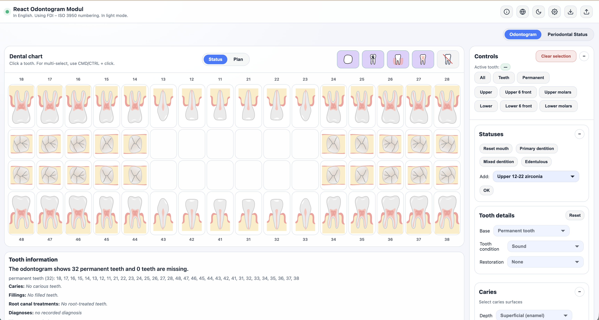
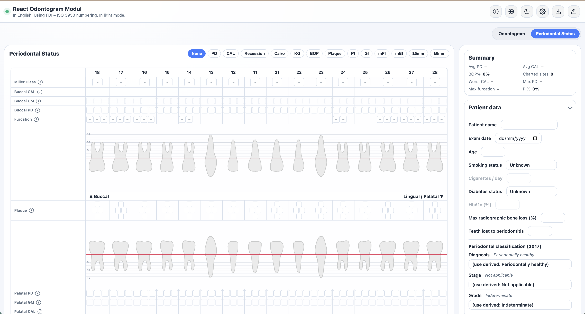
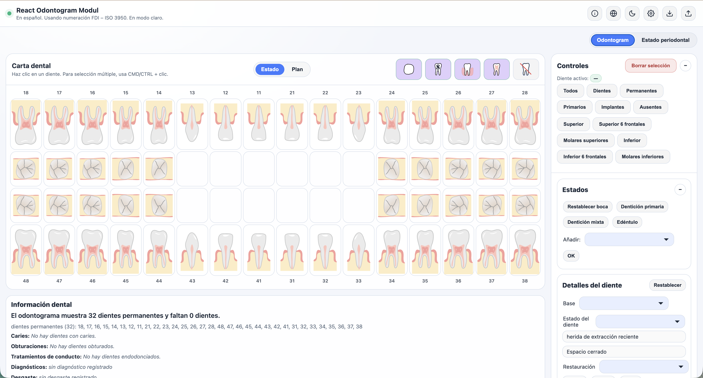
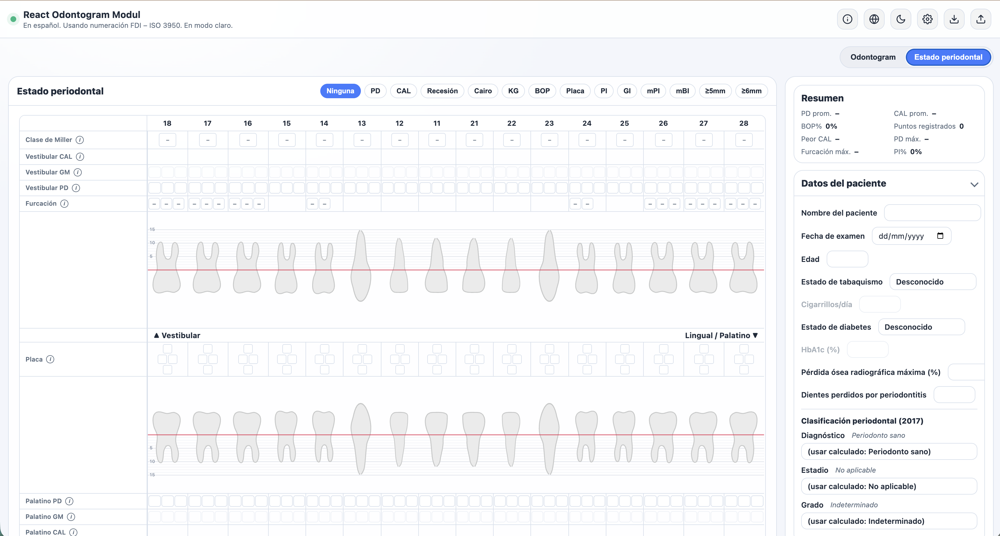

React Odontogram Module - v2.0.2
🦷 React Odontogram Modul

🌐 Languages: 🇬🇧 English | 🇪🇸 Español | 🇩🇪 Deutsch | 🇭🇺 Magyar | 🇮🇹 Italiano | 🇸🇰 Slovenčina | 🇵🇱 Polski | 🇷🇺 Русский | 🇧🇷 Português (BR) | 🇸🇦 العربية | 🇨🇳 简体中文
🇬🇧 English
📋 Overview
This project is an interactive, browser-based odontogram editor that supports fast dental charting with a clean UI. It renders layered SVG tooth templates to represent restorations, caries, endodontic status, mobility, and other clinical details, while providing multi-select, selection filters, and predefined status presets.

🔗 Test URL: https://react-advanced-odontogram.vercel.app/
📦 Use as an npm package
The odontogram ships as a self-contained React component library on npm:
react-advanced-odontogram.
Requirements
- React 18 or 19 (declared as a peer dependency — provided by your app).
- A bundler that understands the
exportsfield and ESM: Vite, webpack 5, Next.js, Rollup, esbuild, Parcel. The package is ESM-only. - Node ≥ 18 for tooling.
Installation
npm install react-advanced-odontogram react react-dom
Basic usage
Render OdontogramShell and import the stylesheet once anywhere in your app:
import { OdontogramShell } from "react-advanced-odontogram";
import "react-advanced-odontogram/style.css";
export function Chart() {
return (
<OdontogramShell
language="en" // hu | en | de | es | it | sk | pl | ru | pt-br | ar | zh
numberingSystem="FDI" // FDI | Universal | Palmer
darkMode={false}
/>
);
}
Component props
OdontogramShell is a controlled component. The most common props:
| Prop | Type | Default | Description |
|---|---|---|---|
language |
Language |
"hu" |
UI language (hu/en/de/es/it/sk/pl/ru/pt-br/ar/zh). |
numberingSystem |
"FDI" | "Universal" | "Palmer" |
"FDI" |
Tooth numbering system. |
darkMode |
boolean |
false |
Dark theme toggle. |
readOnly |
boolean |
false |
Disable all editing (view-only). |
themeConfig |
OdontogramThemeConfig |
— | Override theme CSS variables (--odon-*). |
plugins |
OdontogramPlugin[] |
— | Register custom state plugins / extra layers. |
enableNotes |
boolean |
false |
Enable per-tooth notes. |
enableIcdas |
boolean |
false |
Enable ICDAS II caries scoring. |
onLanguageChange / onNumberingChange / onDarkModeChange |
(value) => void |
— | Fire when the user changes the setting from the UI. |
Finer-grained detail-level props (pulpDetailLevel, secondaryCariesMode, rootCariesMode, radiographicDepthMode, wearDetailLevel, discolorationDetailLevel, surfaceNotation, showStatusCard, showOrthoCard) are also accepted — see the shipped .d.ts types for the full, typed list.
Public API (named exports)
OdontogramShell is both the default export and a named export. The imperative state API, the standalone PerioChart component, the guided tour, and all public types are named exports from the same entry point:
import {
OdontogramShell, // also the default export
PerioChart, // standalone periodontal chart component
// read state
getOdontogramSummary,
getToothStateSummary,
onStateChange, // subscribe to state changes
// export / import
exportFhir, // HL7 FHIR R4 bundle
exportSvg, exportImage, // vector / raster chart export
setImportFormat,
// control
setReadOnly, getReadOnly,
clearSelection,
registerPlugins, setPluginState, getPluginState,
startIntroTour, // launch the onboarding tour
// …and many more setX/getX settings functions
} from "react-advanced-odontogram";
The full surface (≈ 44 functions + types such as OdontogramSummary, OdontogramThemeConfig, OdontogramPlugin, FhirExportOptions, PerioViewMode, …) is fully typed in the bundled declarations.
Using it with Next.js (App Router)
The component is client-only, so render it from a Client Component:
"use client";
import { OdontogramShell } from "react-advanced-odontogram";
import "react-advanced-odontogram/style.css";
export default function OdontogramClient() {
return <OdontogramShell language="en" numberingSystem="FDI" />;
}
Or load it with a client-only dynamic import: dynamic(() => import("./OdontogramClient"), { ssr: false }).
Important notes & current limitations
- ESM-only — the package publishes a single ES module (
dist/odontogram.js) plus a type-declaration entry (dist/index.d.ts). It targets bundler module resolution; there is no CommonJS build. - The stylesheet is separate — you must import
react-advanced-odontogram/style.cssonce; it is not injected automatically. Styling is global CSS scoped under.odontogram-rootand driven by--odon-*CSS variables. - SSR / client-only — the component reads the DOM on mount (
document), so it must run in the browser. In SSR frameworks, render it in a Client Component ("use client") or via a client-only dynamic import. - Assets are self-contained — the tooth and icon SVGs are inlined into the JavaScript bundle at build time; there is no runtime asset fetch to configure and nothing extra to copy to your public folder.
- One instance per page — engine state is currently a module-level singleton, so rendering two
<OdontogramShell>instances on the same page would make them share a single chart's state. Multi-instance support is planned for a future release.
✨ Key Features
- 🖱️ Fast selection and multi-select (CMD/CTRL + click)
- 🦷 Tooth types: permanent, primary (milk), implant, subgingival, missing
- 🦷 Tooth substrate (orthogonal to any restoration): natural, radix (root remnant), broken, prepared for crown
- 👑 Restorations by type × material: crown / inlay / onlay / veneer / bridge in e.max, gold, gradia, zirconia, metal, metal-ceramic, telescope or temporary (onlay is occlusal-view only) — chosen from one combined low-click "Fix: Crown – …" picker; legacy
metalcrowns migrate tometal-ceramic(PFM); implants use the same type × material model, composed with an implant connector layer. The picker is scoped by tooth kind: an implant offers only crown/bridge (plus its five attachment options, below); a missing/gap tooth offers only a bridge pontic (plus removable-partial/-full); aradixsubstrate hides the restoration control entirely (no restoration can be authored on a root remnant) - 🦿 Removable/attachment prosthetics on the dedicated
prosthesisaxis ("Kivehető:" entries in the combined picker): implant healing abutment, locator, locator with overdenture, bar, bar with overdenture; tooth-supported removable partial or full denture - 🌉 Bridge teeth render both the crown cap and the saddle connector; a multi-tooth bridge-span overlay renders one continuous, arch-aware connector across consecutive bridge teeth (pontics + abutments) and the inter-tooth gaps between them (upper vs. lower arch use mirrored saddle geometry, keeping the connector aligned on both arches), included in PNG/JPG/SVG export; applying a bridge via a Statuses preset recomputes the overlay immediately
- 🔍 Caries charting on 6 surfaces: mesial, distal, buccal, lingual, occlusal, subcrown
- 🪥 Filling materials per surface: amalgam, composite, GIC, temporary
- 🏥 One merged "Pulp / Endo status" selector (grouped: vital pulp vs. treated/endo): endodontic states (medicinal filling, root canal filling, incomplete root filling, glass fiber post, metal post) and AAE pulp diagnosis (
pulpDx: normal / reversible / irreversible pulpitis / necrosis) are mutually exclusive — a root-treated tooth (endoset) cannot also carry a vital pulp diagnosis; on treatment,pulpDxis normalized tonormaland the diseased-pulp glyph is suppressed. Reversible pulpitis renders a reduced pulp glyph. An optional 3-level pulp detail setting (pulpDetailLevel: simple / AAE / practical-Latin) surfaces 9 practical-Latin pulp subtypes (pulpa sana … gangraena pulpae) viapulpLatin; resection and parapulpal pin remain separate special indicators - 🦴 Apical diagnosis (
apicalDx: symptomatic/asymptomatic apical periodontitis, acute/chronic apical abscess, condensing osteitis) drives the periapical glyph directly; a granuloma/cyst lesion-subtype qualifier is shown only under symptomatic/asymptomatic apical periodontitis (the redundant "abscess" subtype was dropped — it's already covered by the apical diagnosis) - 🩹 Merged "Root and periodontium" card (single collapsible section for root/periapical and periodontal findings)
- ⚕️ Modifications: periapical inflammation (shown only on missing/extraction-socket teeth; hidden on present teeth, where
apicalDxalone drives the periapical glyph, and on implants, whereperiImplantcovers it), periodontal disease, mobility grades (M1/M2/M3, hidden on implants) - 🦷🔩 Peri-implant status (
periImplant: none / mucositis / peri-implantitis-mild / -moderate / -severe) — 2018 World Workshop staging, shown as a dedicated selector on implants; mucositis reuses the periodontal gum glyph, peri-implantitis adds a gradedperi-implant-bone-losslayer (opacity 0.4/0.7/1.0). Implants no longer render the periapical lesion glyph — their inflammation is expressed through this axis instead — and the periodontal-modifier checkboxes are hidden on implants (the ad-hoc "Peri-implantitis" checkbox relabel is retired) - 🏷️ Special indicators: crown needed, crown replacement needed, missing closed gap, extraction plan, fissure sealing, contact point loss
- 👁️ Occlusal view, wisdom teeth, bone and pulp visibility toggles
- 🔢 12 selection filters (all, present, permanent, milk, implants, missing, upper/lower, front/molars)
- 📊 Predefined status presets (reset, primary dentition, mixed dentition, edentulous)
- 📦 34 predefined restoration templates (bridges, removable dentures, bar dentures with implants)
- 💾 Status export/import in JSON (version 2.19; imports still accept legacy 1.4 and 2.0 through 2.18 and migrate automatically, with plugin custom states and per-tooth notes)
- 🔗 HL7 FHIR R4 export (collection Bundle of per-tooth Observations, ISO 3950 tooth coding for permanent dentition, local code system — SNOMED CT mapping planned)
- ✚ Cross/plus surface selection UI (B/M/O/D/L) for caries and fillings
- 🧱 Per-surface restoration materials (mixed fillings, e.g. buccal amalgam + distal composite)
- 🖼️ PNG/JPG/SVG image export of the chart (downloadable; PNG/JPG rasterized from vector SVG)
- 🦷 Caries/subcaries is a per-surface state machine: a caried surface with no filling renders as primary caries (ICDAS-tiered opacity); once a filling is present on that surface it renders as recurrent caries instead (the
subcaries-{surface}layer, CARS-scored) — the two are never both active on the same surface - 🎯 Unified per-surface severity (
cariesSeverity, 0–6, replacing the old separate ICDAS-depth + CARS fields): read as ICDAS depth on a primary surface, as a named CARS score (Sound … Extensive cavity) on a recurrent one, via a contextual popup that shows only the scale relevant to the surface's current state - 🌱 Root caries (
rootCaries: none / active / arrested / active-cavitated), wiring the dedicated root-caries artwork layer at a severity-driven opacity (active 0.5 / arrested 0.7 / active-cavitated full) - 📡 Radiographic caries depth (
radiographicDepth: none / E1 / E2 / D1 / D2 / D3 per surface), independent of the visual ICDAS/CARS severity scale, surfaced as a badge and round-tripped through its own FHIR Observation - 🎚️ Three caries granularity settings (
secondaryCariesMode,rootCariesMode,radiographicDepthMode) plus acariesDepthEnabledtoggle, collapsing each scale to a simpler picker view without losing the stored value - 🩹 Fillings-panel subcaries summary line: lists any selected tooth with recurrent caries and its surfaces below the filling controls (e.g. "36 (O) has subcaries set on its filling.")
- 🪛 Per-surface filling defects (
fillingDefect: none / marginal / fracture / wear) on direct restorations, independent of recurrent caries — authored via a per-surface indicator on the Fillings card (mirroring the caries-depth indicator, its option list stacked vertically), rendered on the chart, and shown in the tooltip and the whole-mouth fillings summary with an explicit label (e.g. "36 (O) – Filling defect: O: marginal"), the same way recurrent caries is labeled on the Caries line; the Fillings card also shows a hint note for any selected tooth with a recorded filling defect (e.g. "36 has a filling defect recorded."), parallel to the existing subcaries hint note - 🦷💥 Tooth wear typed by clinical cause and location (
wearEdge: none / attrition / erosion, incisal/occlusal;wearCervical: none / abrasion / abfraction / erosion, cervical) — replacing the two on/off bruxism-wear flags; authored via two dropdowns on the wear row, reuses the existing wear artwork, and shown in the tooltip and a new whole-mouth "Wear" summary section - 🎨 Tooth discoloration by cause (
discoloration: none / tetracycline / fluorosis / nonvital / extrinsic / other) on permanent and milk teeth — tints the shown natural crown a representative colour when the tooth has no restoration and natural substrate; shown in the tooltip and a new whole-mouth "Discoloration" summary section; completes the surface & structural conditions set alongside filling defects and wear - ✏️ Anterior teeth (incisors/canines) label their occlusal surface "incisal" throughout the UI (picker, popup, summaries); the stored surface key stays
occlusal - 🔤 Position-aware surface notation (Settings → Tooth details → "Surface notation", simple/full, default full): in full mode the caries/filling surface letter and label follow tooth anatomy — occlusal → I/incisal on anterior teeth, buccal → L/labial on anterior teeth, lingual → P/palatal on upper teeth and L/lingual on lower teeth (mesial/distal/subcrown are unaffected); simple mode always uses the generic B/M/O/D/L/SC set regardless of tooth position. Applies to the whole-mouth summary and to both the caries and filling-defect surface pickers (letter + caption); the stored surface key is unaffected
- 🦷↕️ Per-tooth orthodontic charting (
orthoAppliance: none / bracket / band;orthoDrift: none / mesial / distal;orthoVertical: none / extrusion / intrusion;orthoRotation: boolean) on a present natural tooth (permanent or milk) — reuses the dormant v2.5.0 ortho artwork (no new SVG); shown on the chart, in the tooltip, and a new whole-mouth "Orthodontics" summary section - 🪨 Calculus, and root resorption typed as internal or external-cervical (
resorptionType) - 📏 Per-surface caries depth (superficial / dentin / deep), or optional ICDAS II scoring (0–6) via
enableIcdas - 🩹 Crown marginal-leakage toggle, shown only for a crown or bridge restoration
- 🧰 Unified topbar icon row with a tabbed Settings modal (General / Panels / Tooth details / Caries / Pulpa / Notes / Periodontal — numbering, notes, panel visibility, ICDAS, caries-depth toggle, root/radiographic caries granularity, pulp detail level, tooth wear/discoloration detail level, tooth information)
- 🗂️ Settings → "Panels" tab: independently show/hide the Statuses and Orthodontics whole-mouth summary panels
- 🦷🩺 Settings → "Periodontal" tab: 16 per-index show/hide toggles for the perio-chart rows (grouped pocket/hygiene/mucogingival/support/peri-implant — PD/GM/CAL/BOP, plaque, PI, GI, CEJ visibility, root concavity, KG, GT, furcation, mobility, Miller class, mPI, mBI), each with a description, plus a translated-vs-canonical index-name display option (canonical = a fixed English/Latin scientific name in every UI language; tooltips always stay localized regardless of this setting). Both are app-level preferences (like
perioViewMode) — never part of the export payload - 🩹 Secondary-caries (CARS) settings control merged into the Caries settings tab, positioned above Radiographic depth (the separate "Secondary caries" tab is retired)
- 🎚️ Tooth details detail level (Settings → Tooth details): a simple/complex setting for tooth wear and for discoloration. Simple mode shows a yes/no toggle per finding (wear on → attrition/abrasion, discoloration on → other); complex mode (default) keeps the type/cause dropdowns, and the stored value is preserved when switching levels
- 📋 Tooth information panel: live text summary of the whole chart (tooth counts, present/missing lists, caries incl. secondary, fillings, root canals, prosthetics, implants, periodontal status) — shown by default, toggleable in Settings
- 🗂️ Consolidated Export dropdown (Status JSON / FHIR / PNG / JPG)
- 📥 Import dropdown with FHIR import (round-trips exported Bundles)
- ⏳ Progress overlay during image export
- 🎓 12-step interactive intro tour
- 🔢 Three numbering systems (FDI, Universal, Palmer)
- 🌐 I18n — 11 UI languages (HU/EN/DE/ES/IT/SK/PL/RU/PT-BR/AR/ZH) with a language switcher; Arabic renders the UI right-to-left with the dental/perio charts pinned left-to-right (machine-translated, native-speaker review pending for AR/ZH)
- 🌗 Dark mode support with toggle button (standalone or controlled by parent app)
- 🎨 Custom theme configuration (
themeConfigprop) with CSS custom properties (--odon-*) - 📱 Mobile touch UX: tap-to-zoom popover, long-press context menu, pinch-to-zoom, WCAG 44px touch targets, arch toggle navigation
- 🔌 Custom SVG plugin system: inject visual overlays, per-tooth custom state, JSON export/import support
- ⚠️ State validation warnings for incompatible tooth state combinations
- 🏷️ Automatic state tooltip on tooth tiles (shows all active states)
- 🩺 Modernized per-tooth tooltip and whole-mouth summary panel: both surface the full set of clinical findings (pulp/apical diagnosis + lesion subtype, root resorption, peri-implant status, graded root caries, calculus, crown marginal leakage, fracture, contact loss, typed edge/cervical wear), with a dedicated "Diagnoses" section in the panel, a dedicated "Wear" section, and a coarse caries-severity qualifier (superficial/moderate/deep)
- ♿ Keyboard accessibility (WCAG): ARIA listbox/option roles, Enter/Space selection, arrow key navigation, focus-visible outlines
- 🔒 Read-only mode: disable all interactions for print/report/view use cases
- ✨ Selection animations: pulsing dashed border and glowing drop-shadow on selected teeth (with prefers-reduced-motion support)
- 📝 Per-tooth notes: double-click to add/edit notes, note icon next to tooth number, hover tooltip with note text, JSON export/import
- 🔀 Status ↔ Plan chart split: a
Status | Plantoggle in the chart header switches between a current-status chart and a plan (intended post-treatment) chart, each with its own tooth states; the plan chart starts as a copy of status the first time you switch to it, and edits in one chart never affect the other. Export/import (exportStatus/exportFhir/file import) always target the status chart; the plan chart is read/written separately via its own API (see Public API below) and — when it differs from status — is included as an additiveplansection in the JSON export - 📝 "What changes" box: whenever the plan differs from the current status, a box under the Tooth-information panel lists every difference per tooth and per treatment axis (presence, substrate, restoration, prosthesis, planned crown, orthodontics, pulp/endo, apical) as a
tooth: axis from → toline; also available programmatically viagetPlanChanges()

- 🩺 Periodontal charting: per-site probing depth, gingival margin, bleeding on probing (+ suppuration) at the six standard sites per tooth, with derived clinical attachment level (CAL = PD + gingival margin), recession, and whole-mouth %BOP. A graphical full-mouth perio chart — each arch drawn as two separate buccal/palatal(lingual) SVGs (reusing the tooth artwork with a uniform crowns-to-band orientation on both aspects; an implant graphic for implant teeth) with a red CEJ line, a numbered millimeter guide grid, and a gingival-margin / pocket-depth curve over the teeth, split by a central perio index band (labeled
▲ Buccal … Lingual/Palatal ▼) that carries the shared per-tooth indices — Miller class at the very top, and Plaque/PI/GI/mPI/mBI rendered as an anatomical diamond tile per tooth (buccal tip up, lingual tip down, mesial/distal on the middle row swapped per side so mesial always points toward the arch midline); the number rows (full index names — PD/GM/CAL/BOP + mobility + furcation — in larger, more touch-friendly cells) aligned in columns and a summary (avg PD/CAL, %BOP, PI%), with keyboard auto-advance entry; the chart dynamically scales to fill the available width, responsive at any window size. Presented as anOdontogram | Periodontal Statusview toggle, whose right panel is repurposed into a perio-context sidebar (patient data, the 2017 classification, and the whole-mouth summary) while that view is active (a Settings option switches the whole presentation back to a popup), and still a separately-invocable component (PerioChartexport) so a host app can call up the perio chart independently of the base odontogram. Per-site FHIR export via the LOINC periodontal panel (74029-0; PD32910-2, recession32911-0, CAL32912-8) - 🅿️ Proposed styling: in Plan mode, findings the plan adds vs the current status (planned crown, extraction, orthodontic movement, prosthesis, …) render with a distinct dashed, tinted "proposed" outline so the plan reads as intent, not fact — with a "dashed = proposed" legend in the chart card. Status-mode rendering is byte-identical; the treatment is plan-only and fully reset on switching back
- 🧪 1721 automated tests passing (1 additional test skipped) (Vitest) across 163 test files (164 total) covering numbering, translations, presets, i18n, App component, theme, touch, plugins, accessibility, and clinical-axis/diagnosis parity
- 📖 TypeDoc API documentation with JSDoc comments on all public exports (
npm run docs)
📦 Modules
- 🦷 Odontogram grid and tooth tile UI
- 🎛️ Controls and status panel
- 🎨 SVG layering engine and templates
- 🔢 Tooth numbering and label mapping (FDI/Universal/Palmer)
- 🌐 Localization — 11 UI languages (HU/EN/DE/ES/IT/SK/PL/RU/PT-BR/AR/ZH), including Arabic (RTL)
- 💾 Status export/import
- 📋 Status extras: predefined restoration templates
- 🎨 Theme configuration: customizable color palette via
--odon-*CSS properties - 📱 Mobile touch interactions (tap-to-zoom, long-press, pinch-to-zoom, arch toggle)
- 🔌 Custom SVG plugin system
- ⚠️ State validation and tooltip system
- ♿ Keyboard accessibility and ARIA support
- 🔒 Read-only mode
- ✨ Selection animations
- 📝 Per-tooth notes system
- 🧪 Automated test suite (Vitest + Testing Library)
🛠️ UI Controls
🔝 Topbar:
- Language switcher (HU/EN/DE/ES/IT/SK/PL/RU/PT-BR/AR/ZH dropdown)
- Dark mode toggle button (sun/moon icon, switches between light and dark theme)
- Numbering system switcher (FDI/Universal/Palmer dropdown)
- Export Status / Import Status buttons
📊 Chart header:
- Occlusal view toggle
- Wisdom teeth visibility toggle
- Bone visibility toggle
- Pulp visibility toggle
- Clear selection button
🔍 Selection filters:
- Select All / All Present / Permanent / Milk / Implants / All Missing
- Select Upper / Upper Front 6 / Upper Molars
- Select Lower / Lower Front 6 / Lower Molars
📋 Status presets:
- Reset All (reset mouth)
- Primary Dentition
- Mixed Dentition
- Edentulous toggle
📦 Status extras dropdown:
- Upper/Lower zircon bridges (12-22, 13-23, 16-26, full arch)
- Upper/Lower metal bridges (12-22, 13-23, 16-26, full arch)
- Upper/Lower partial removable dentures
- Upper/Lower full removable dentures
- Upper/Lower bar dentures with implants
🦷 Tooth editor panel (for the selected tooth/teeth, grouped into collapsible cards):
- Base row: tooth selection (base type incl. broken-crown variants) and tooth substrate (natural/radix/broken/crownprep)
- Restoration row: the combined "Fix: …" / "Kivehető: …" restoration dropdown (
restorationType×restorationMaterialfixed options plus theprosthesisattachment/removable options, gated by tooth kind); crown marginal-leakage checkbox (crown/bridge only); broken-crown location checkboxes; crown needed / crown replacement needed toggles - Wear & discoloration row: incisal/occlusal wear type dropdown, cervical wear type dropdown, discoloration cause dropdown (each swaps to a simple yes/no toggle under Settings → Tooth details → simple mode)
- Orthodontics card: appliance, mesial/distal drift, vertical movement (extrusion/intrusion), rotation toggle — shown on a present natural tooth
- Caries card: caries-depth mode dropdown, subcrown caries checkbox, root-caries severity dropdown, and the B/M/O/D/L per-surface caries picker with a contextual ICDAS-depth/CARS popup and a radiographic-depth badge
- Fillings card: filling-material dropdown, per-surface filling picker (with per-surface material), per-surface filling-defect indicator (marginal/fracture/wear), subcaries and filling-defect hint notes
- Root and periodontium card: merged "Pulp / Endo status" selector, apical diagnosis selector, periapical lesion subtype selector (symptomatic/asymptomatic apical periodontitis only), root resorption type selector, mobility grade selector, peri-implant status selector (implants only)
- Special indicators: extraction plan/wound, missing-closed, fissure sealing, contact-point loss, calculus, parapulpal pin, endo resection, bridge pillar
🦷 Tooth Types and States
Tooth selection (base type):
| Value | Description |
|---|---|
none |
Missing tooth |
tooth-base |
Permanent tooth |
milktooth |
Primary (deciduous) tooth |
implant |
Dental implant |
tooth-under-gum |
Subgingival (unerupted) tooth |
Broken tooth variants:
tooth-broken-inicisal, tooth-broken-distal-inicisal, tooth-broken-distal, tooth-broken-mesial-distal-inicisal, tooth-broken-mesial-distal, tooth-broken-mesial-inicisal, tooth-broken-mesial, no-tooth-after-extraction
Tooth substrate (permanent teeth):
natural (default), radix (root remnant), broken, crownprep (prepared for crown)
Restoration type (permanent teeth):
none, crown, inlay, onlay (occlusal view only), veneer, bridge
Restoration material (permanent teeth):
none, emax, gold, gradia, zircon, metal, metal-ceramic (legacy metal crowns migrate here), telescope, temporary
Restoration options are gated by tooth kind (restorationOptions() in src/registry/restorations.ts): an implant offers only crown/bridge restoration types (composed with an implant connector layer) plus the five prosthesis attachment entries below; a missing/gap tooth offers only a bridge pontic plus the two removable-denture prosthesis entries; a radix substrate hides the restoration control entirely. The legacy flat crownMaterial/bridgeUnit fields (pre-v1.14 implant/bridge attachment values) are retired from the live model — only accepted as a read-only migration path for old payloads.
Prosthesis (prosthesis; orthogonal removable/attachment axis, surfaced as "Kivehető:" entries in the combined restoration dropdown):
none, healing-abutment, locator, locator-denture, bar, bar-denture (implant attachments, with or without an overdenture), removable-partial, removable-full (tooth-supported dentures on a missing/gap tooth). A tooth has either a fixed restoration or a prosthesis, never both — setting one clears the other.
Crown marginal leakage (crownLeakage; boolean): shown only when restorationType is crown or bridge; activates the crown-leakage artwork layer.
Endodontic options (permanent teeth):
none, endo-medical-filling, endo-filling, endo-filling-incomplete, endo-glass-pin, endo-metal-pin
Endodontic options (milk teeth):
none, endo-medical-filling
endo and pulpDx are surfaced through one merged "Pulp / Endo status" <select> (grouped: vital pulp vs. treated/endo) and are mutually exclusive — choosing a treated (endo != none) option resets pulpDx to normal and choosing a pulp diagnosis resets endo to none.
Filling materials (permanent teeth):
amalgam, composite, gic, temporary
Filling materials (milk teeth):
composite, gic, temporary
Filling/caries surfaces:
mesial, distal, buccal, lingual, occlusal, subcrown (caries only)
Modifications:
inflammation (periapical), parodontal (periodontal), mobility (M1/M2/M3)
Periapical lesion type (periapicalType; qualifies the periapical glyph, shown only under symptomatic/asymptomatic apical periodontitis):
none, granuloma, cyst — authoring options; the legacy abscess value is still accepted/stored but no longer offered in the picker, since it duplicates the apical diagnosis. On import it is dropped: folded into apicalDx when the tooth carries the inflammation modifier, otherwise cleared to none
Pulp diagnosis (AAE terminology; pulpDx):
normal, reversible-pulpitis (renders a reduced pulp glyph), irreversible-pulpitis, necrosis — mutually exclusive with endo; normalized to normal on a root-treated tooth
Pulp diagnosis, practical Latin (pulpLatin; shown by the pulp picker only when pulpDetailLevel is latin):
none, pulpa-sana, hyperaemia-pulpae, pulpitis-acuta-serosa, pulpitis-acuta-purulenta, pulpitis-chronica-clausa, pulpitis-chronica-ulcerosa, pulpitis-chronica-hyperplastica, necrosis-pulpae, gangraena-pulpae
Pulp detail level (pulpDetailLevel, global setting): simple, aae (default), latin — controls which pulp vocabulary the picker offers
Apical diagnosis (apicalDx; drives the periapical glyph):
normal, symptomatic-apical-periodontitis, asymptomatic-apical-periodontitis, acute-apical-abscess, chronic-apical-abscess, condensing-osteitis
Root resorption type (resorptionType):
none, internal, external-cervical
Peri-implant status (periImplant; implant-only, 2018 World Workshop staging): mucositis reuses the periodontal gum glyph; peri-implantitis-* adds the peri-implant-bone-loss layer at severity-scaled opacity (mild 0.4 / moderate 0.7 / severe 1.0). Implants no longer render the periapical lesion glyph (their inflammation is expressed via this axis instead), and the mods inflammation/parodontal checkboxes are hidden on implants:
none, mucositis, peri-implantitis-mild, peri-implantitis-moderate, peri-implantitis-severe
Caries severity (cariesSeverity; unified per-surface field, 0–6): on a surface with no filling it is read as the ICDAS caries-depth scale (superficial / dentin / deep, or the raw ICDAS II codes 0–6 when enableIcdas is set) and renders the primary caries-{surface} layer; on a surface with a filling it is read as a named CARS score (0 sound … 6 extensive cavity) and renders the subcaries-{surface} (recurrent-caries) layer instead — a surface is never both primary and recurrent at once
Root caries (rootCaries; wires the caries-root artwork layer on a present tooth, opacity driven by severity — active 0.5 / arrested 0.7 / active-cavitated full):
none, active, arrested, active-cavitated
Radiographic caries depth (radiographicDepth; per surface, independent of the visual ICDAS/CARS cariesSeverity scale):
none, E1, E2, D1, D2, D3
Caries granularity settings (global): secondaryCariesMode (simple/standard/full, default standard), rootCariesMode (simple/severity, default simple), radiographicDepthMode (off/threeLevel/detailed, default off), cariesDepthEnabled (boolean, default true) — each collapses its scale to a simpler picker view without altering the stored value
Special indicators:
crownNeeded, crownReplace, missingClosed, extractionPlan, extractionWound, bridgePillar, fissureSealing, contactMesial, contactDistal, endoResection, calculus, parapulpalPin
Tooth wear (wearEdge, wearCervical; per-location clinical type, gated on tooth-base + no restoration + natural substrate; render the existing tooth-bruxism-wear/tooth-bruxism-neck-wear layers):
wearEdge: none, attrition, erosion — wearCervical: none, abrasion, abfraction, erosion
Discoloration (discoloration; per-tooth cause, gated on a natural tooth-base or milk tooth + no restoration + natural substrate; tints the shown natural crown's fill — no new SVG):
none, tetracycline, fluorosis, nonvital, extrinsic, other
Filling defect (fillingDefect; per surface, direct-restoration finding independent of recurrent caries — gated to surfaces present in fillingSurfaceMaterials; renders the defect-{surface} artwork layer):
none, marginal, fracture, wear
Orthodontics (orthoAppliance, orthoDrift, orthoVertical, orthoRotation; per-tooth, gated on a present natural tooth — permanent or milk):
orthoAppliance: none, bracket, band — orthoDrift: none, mesial, distal — orthoVertical: none, extrusion (arrow-up glyph), intrusion (arrow-down glyph) — orthoRotation: boolean
Tooth detail / notation settings (global session settings, Settings → Tooth details): wearDetailLevel and discolorationDetailLevel (ToothDetailLevel: simple/complex, default complex — simple mode shows a yes/no toggle instead of the full type/cause dropdown, without mutating the stored value) and surfaceNotation (simple/full, default full — controls whether caries/filling surface letters/labels are position-aware; see "Position-aware surface notation" above)
⚙️ Settings
Opened from the topbar gear icon; a focus-trapped, ARIA dialog with a tabbed layout (Esc/backdrop-click to close, arrow keys to switch tabs). All settings are session-level UI state only, unless noted — none of them mutate per-tooth data or the export payload.
- General: numbering system (FDI/Universal/Palmer), language, dark/light theme, tooth-information panel visibility
- Panels: independently show/hide the whole-mouth Statuses card and the Orthodontics card (both default visible)
- Tooth details: wear detail level and discoloration detail level (simple/complex, each default complex), surface notation (simple/full, default full)
- Caries: ICDAS II scoring toggle (
enableIcdas), caries-depth toggle (cariesDepthEnabled), root-caries granularity (rootCariesMode: simple/severity), secondary/CARS granularity (secondaryCariesMode: simple/standard/full), radiographic-depth granularity (radiographicDepthMode: off/threeLevel/detailed) — the former separate "Secondary caries" tab is merged into this one, with the CARS control positioned directly above radiographic depth - Pulpa: pulp detail level (
pulpDetailLevel: simple/AAE/practical-Latin, default AAE) — controls which vocabulary the "Pulp / Endo status" picker offers; changing it live-refreshes the whole-mouth summary and every open tooltip - Notes: enable/disable per-tooth notes (
enableNotes) - Periodontal: per-index show/hide toggles for all 16 perio-chart rows (
perioRowVisibility, default all visible), grouped Pocket (PD/GM/CAL/BOP) / Hygiene (Plaque/PI/GI) / Mucogingival (CEJ visibility/Root concavity/KG/GT) / Support (Furcation/Mobility/Miller class) / Peri-implant (mPI/mBI), each row with its own description; plus a translated-vs-canonical index-name mode (perioIndexNameMode:translateddefault /canonical— a fixed English/Latin scientific name shown in every UI language). App-level preferences only (mirrorsperioViewMode) — never serialized, tooltips stay localized in either mode
🖼️ SVG Template System
Tooth templates (in src/assets/teeth-svgs/):
| Template | Teeth using it |
|---|---|
11.svg |
11, 12, 21, 22, 31, 32, 41, 42 (incisors) |
13.svg |
13, 23, 33, 43 (canines) |
14.svg / 14_occl.svg |
14, 15, 24, 25, 34, 35, 44, 45 (premolars) |
16.svg / 16_occl.svg |
16, 17, 18, 26, 27, 28, 36, 37, 38, 46, 47, 48 (molars) |
Templates are rotated 180 degrees for the lower jaw and mirrored horizontally for the left side.
Icon SVGs (in src/assets/icon-svgs/):
icon_8.svg (wisdom), icon_gum.svg (bone), icon_no_selection.svg (clear), icon_occl.svg (occlusal view), icon_pulp.svg (pulp)
🔢 Numbering Systems
FDI (ISO 3950): Adult teeth 11-18, 21-28, 31-38, 41-48. Primary teeth 51-55, 61-65, 71-75, 81-85.
Universal (USA): Adult teeth numbered 1-32. Primary teeth lettered A-T.
Palmer (Zsigmondy-Palmer): Quadrant + position format (e.g. UR-1, LL-5). Primary teeth use letters A-E per quadrant.
🚀 Usage
Development:
npm install
npm run dev
Build:
npm run build
Preview:
npm run preview
🔗 Integration
The component can be embedded in any React app. Example:
import App from "./App";
export default function Host(){
return (
<App
language="en"
onLanguageChange={(lang) => console.log(lang)}
numberingSystem="FDI"
onNumberingChange={(system) => console.log(system)}
darkMode={false}
onDarkModeChange={(dark) => console.log(dark)}
/>
);
}
Dark mode integration:
- Standalone mode: Omit
darkModeprop — the component manages its own theme state via the topbar toggle button and adds/removes the.darkclass on<html>. - Controlled mode: Pass
darkModeandonDarkModeChange— the parent app controls the theme. The toggle button still appears but callsonDarkModeChangeinstead of managing internal state. The parent is responsible for adding/removing the.darkclass on<html>.
Custom theme:
<App
themeConfig={{
colors: {
accent: '#e74c3c',
background: '#fafafa',
text: '#222222',
},
}}
/>
Plugin integration:
import App, { type OdontogramPlugin, setPluginState } from "./App";
const myPlugin: OdontogramPlugin = {
id: "implant-brand",
label: { en: "Implant Brand", hu: "Implantátum márka" },
layer: "overlay",
renderSvg: (toothNo, _quadrant, state) => {
if (!state) return null;
return `<text x="16" y="60" font-size="6" fill="#3b7bff">${state}</text>`;
},
};
<App plugins={[myPlugin]} />
// Set plugin state for a tooth:
setPluginState(11, "implant-brand", "Straumann");
🧪 Testing
npm run test # Run all 1704 tests (1 additional test skipped)
npm run test:watch # Watch mode
npm run test:coverage # Coverage report
📖 API Documentation
npm run docs # Generate TypeDoc docs in docs/
📡 Public API
Component props:
| Prop | Type | Default | Description |
|---|---|---|---|
language |
string |
'hu' |
UI language (hu/en/de/es/it/sk/pl/ru/pt-br/ar/zh) |
onLanguageChange |
(lang) => void |
— | Callback when language changes |
numberingSystem |
string |
'FDI' |
Numbering system (FDI/Universal/Palmer) |
onNumberingChange |
(system) => void |
— | Callback when numbering changes |
darkMode |
boolean |
undefined |
Dark mode state. Omit for standalone mode. |
onDarkModeChange |
(dark) => void |
— | Callback when dark mode toggles. Required for controlled mode. |
themeConfig |
OdontogramThemeConfig |
undefined |
Custom color overrides via CSS custom properties (--odon-*). |
plugins |
OdontogramPlugin[] |
undefined |
Custom SVG plugins for visual overlays and per-tooth custom state. |
readOnly |
boolean |
undefined |
Disable all interactions (click, touch, keyboard). Useful for print/report views. |
enableNotes |
boolean |
undefined |
Enable per-tooth notes. Double-click a tooth to add/edit notes. |
Exported functions for external control:
| Function | Description |
|---|---|
initOdontogram() |
Initialize the engine and render all teeth |
destroyOdontogram() |
Clean up the engine and remove event listeners |
setNumberingSystem(system) |
Switch between FDI, Universal, Palmer |
clearSelection() |
Deselect all teeth |
setOcclusalVisible(on) |
Toggle occlusal view on/off |
setWisdomVisible(on) |
Show/hide wisdom teeth |
setShowBase(on) |
Show/hide bone layer |
setHealthyPulpVisible(on) |
Show/hide healthy pulp |
registerPlugins(plugins) |
Register custom SVG plugins |
setPluginState(toothNo, pluginId, value) |
Set a plugin's custom state for a tooth |
getPluginState(toothNo, pluginId) |
Get a plugin's custom state for a tooth |
getToothStateSummary(toothNo) |
Get localized summary of all active states |
getOdontogramSummary() |
Get a structured, localized text summary of the whole chart (counts, sections) |
onStateChange(callback) |
Subscribe to state changes; returns an unsubscribe function |
setReadOnly(value) |
Enable/disable read-only mode |
getReadOnly() |
Get current read-only state |
setNotesEnabled(value) |
Enable/disable per-tooth notes |
getNotesEnabled() |
Get current notes-enabled state |
setPulpDetailLevel(level) |
Set the pulp picker's vocabulary — "simple", "aae", or "latin" |
getPulpDetailLevel() |
Get the current pulp detail level |
getChartMode() |
Get the currently active chart — "status" or "plan" |
setChartMode(mode) |
Switch the active chart to "status" or "plan"; the plan chart is deep-copied from status the first time it's entered |
getStatusChart() |
Get the status chart's payload ({version, globals, teeth}), independent of which chart is currently active |
getPlanChart() |
Get the plan chart's payload ({version, globals, teeth}), independent of which chart is currently active |
setPlanChart(payload) |
Replace the plan chart's teeth from a payload (status is left untouched); marks the plan chart initialized |
getPlanChanges() |
Get the structured status→plan diff ({ toothNo, axis, from, to }[]) — one entry per tooth per treatment axis that differs between the status and plan charts; empty when no plan exists. Also surfaced on getOdontogramSummary() as plannedChanges |
setPerioSite(toothNo, site, patch) |
Set periodontal data for one of the six sites (patch = { pd?, gm?, bop?, sup? }); pd null/<1 un-charts the site. Validates + clamps (PD 1–15, GM −10…+20) |
getToothPerio(toothNo) |
Get a tooth's per-site periodontal record (charted sites only) |
getToothCal(toothNo) |
Get derived per-site CAL (pd + gingival margin) for a tooth |
getPerioSummary() |
Whole-mouth periodontal aggregates: charted-site count, bleeding count, %BOP, worst CAL, max PD |
getPerioChart() |
Get the active chart's per-tooth periodontal records |
PerioChart |
React component (named export) — the full-mouth perio-chart overlay ({ open, onClose }), mountable independently of OdontogramShell for host integration |
openPerioOverlay() / closePerioOverlay() / isPerioOverlayOpen() |
Programmatically open/close/query the perio-chart overlay — lets a host call up the periodontal chart separately from the base odontogram (shared case state) |
getPerioViewMode() / setPerioViewMode(mode) |
Get/set how the perio chart is surfaced — "toggle" (an Odontogram | Dental Chart view toggle, default) or "popup" (the overlay) |
getPerioOverlayLayer() / setPerioOverlayLayer(layer) |
Get/set the Dental Chart highlight overlay — "none" (default) / "pd" / "cal" / "gr" / "plaque" / "bop" / "pd5" / "pd6" / "cairo"; repaints the teeth by that measure (display-only over existing data) |
getToothRecessionType(toothNo) |
Get the derived Cairo recession type — "none" / "rt1" / "rt2" / "rt3" (computed from the tooth's interproximal vs buccal CAL) |
setCejVisibility(toothNo, v) / getCejVisibility(toothNo) |
Per-tooth CEJ visibility — "none" / "detectable" / "not-detectable" |
setRootConcavity(toothNo, v) / getRootConcavity(toothNo) |
Per-tooth root-surface concavity — "none" / "mild" / "deep" |
setPlaqueIndex(toothNo, surface, grade) / getPlaqueIndex(toothNo, surface) |
Per-surface Silness-Löe Plaque Index grade — 0-3 |
setGingivalIndex(toothNo, surface, grade) / getGingivalIndex(toothNo, surface) |
Per-surface Löe-Silness Gingival Index grade — 0-3 |
setKeratinizedWidth(toothNo, mm) / getKeratinizedWidth(toothNo) |
Per-tooth buccal keratinized gingiva width in mm — 0-15, or null if not charted |
setGingivalThickness(toothNo, v) / getGingivalThickness(toothNo) |
Per-tooth gingival thickness phenotype — "unknown" / "thin" / "medium" / "thick" |
setMillerClass(toothNo, v) / getMillerClass(toothNo) |
Per-tooth Miller recession class — "none" / "i" / "ii" / "iii" / "iv" |
setPeriImplantPlaque(toothNo, surface, grade) / getPeriImplantPlaque(toothNo, surface) |
Implant-only — per-surface Mombelli modified Plaque Index (mPI) grade — 0-3; no-op on a non-implant tooth |
setPeriImplantBleeding(toothNo, surface, grade) / getPeriImplantBleeding(toothNo, surface) |
Implant-only — per-surface Mombelli modified Sulcus Bleeding Index (mBI) grade — 0-3; no-op on a non-implant tooth |
furcationEntrances(toothNo) |
The furcation entrances for a tooth — ["mesial","distal","buccal"] (upper molars), ["buccal","lingual"] (lower molars), ["mesial","distal"] (upper first premolars), else [] |
setFurcation(toothNo, entrance, grade) / getToothFurcation(toothNo) |
Set/get per-entrance furcation involvement (Glickman 1–4; null clears) |
setPlaque(toothNo, surface, present) / getToothPlaque(toothNo) |
Set/get O'Leary plaque presence per surface (mesial/distal/buccal/lingual); feeds the whole-mouth PI% in getPerioSummary() |
getCaseMeta() |
Get the case-level metadata object ({age, smokingStatus, cigarettesPerDay, diabetesStatus, hba1c, toothLossPerio, maxRblPercent, patientName, examDate}) — a single shared block, not per-tooth/dual-state (mirrors the top-level globals payload key); feeds the periodontal staging/grading classification and the PDF report header |
setPatientName(v) |
Set the case's patient name (trimmed; empty string or null clears it) — identity-only, never fed into the periodontal derivation |
setExamDate(v) |
Set the case's exam date (YYYY-MM-DD; invalid/empty clears it) |
setCaseAge(v) |
Set the case's patient age in years — 0-120, or null to clear |
setSmokingStatus(v) |
Set the case's smoking status — "unknown" / "never" / "former" / "current" |
setCigarettesPerDay(v) |
Set cigarettes/day (only meaningful when smoking status is "current") — 0-99, or null to clear |
setDiabetesStatus(v) |
Set the case's diabetes status — "unknown" / "none" / "present" |
setHba1c(v) |
Set HbA1c % (only meaningful when diabetes status is "present") — 3.0-20.0 (one decimal), or null to clear |
setToothLossPerio(v) |
Set teeth lost to periodontitis — 0-32, or null to clear |
setMaxRblPercent(v) |
Set max radiographic bone loss % — 0-100, or null to clear |
resetCaseMeta() |
Reset the case-level metadata object to its empty defaults |
getPerioClassification() |
Get the 2017 World Workshop periodontal classification ({diagnosis, stage, grade, extent, derived, overridden}) — diagnosis/stage/grade/extent derived from the charted perio data and case metadata, each axis replaced by its clinician override when set (derived always exposes the untouched computed values, overridden flags which axes were overridden) |
setDiagnosisOverride(v) |
Override the derived periodontal diagnosis — "health" / "gingivitis" / "periodontitis", or null to clear (revert to derived) |
setStageOverride(v) |
Override the derived periodontal stage — "I" / "II" / "III" / "IV", or null to clear (revert to derived) |
setGradeOverride(v) |
Override the derived periodontal grade — "A" / "B" / "C", or null to clear (revert to derived) |
setExtentOverride(v) |
Override the derived periodontal extent — "localized" / "generalized" / "molar-incisor", or null to clear (revert to derived) |
exportFhir(options?) |
Export the chart as an HL7 FHIR R4 collection Bundle (JSON download). Optional { subject } reference; otherwise a placeholder Patient is embedded |
exportImage(format) |
Download the chart as an image — "png" or "jpg" |
exportSvg() |
Download the chart as a scalable SVG (vector) |
hasAnyPerioData() |
true iff any periodontal axis is charted anywhere in the mouth — drives the perio export auto-skip and disables the perio export-menu items on a blank chart |
exportPerioSvg() |
Download the full periodontal chart (tooth graphics + numeric rows + 2017 classification) as one standalone vector SVG, built headlessly from state via buildPerioSvg() |
exportPerioImage(format) |
Download the periodontal chart as a rasterized image — "png" or "jpg" |
exportPdf(opts) |
Download a jsPDF-native PDF report ({patientData, odontogram, perioStatus, perioDescription}, each section optional) — vector text plus raster tooth/perio-chart images; the two perio sections auto-skip whenever hasAnyPerioData() is false, regardless of opts |
importFhirBundle(input) |
Import a FHIR R4 Bundle (object or JSON string) produced by this module |
setImportFormat(format) |
Set the next file import's parser — "status" or "fhir" |
startIntroTour() |
Launch the 12-step interactive intro tour |
💾 Status Export/Import Format
The export creates a JSON file (version 2.19; imports also accept legacy 1.4 and 2.0 through 2.18 and migrate automatically) containing:
Global fields:
wisdomVisible- wisdom teeth visibleshowBase- bone layer visibleocclusalVisible- occlusal view activeshowHealthyPulp- healthy pulp visibleedentulous- edentulous mode active
Per-tooth fields (32 teeth):
toothSelection- base tooth typetoothSubstrate- tooth substrate (natural/radix/broken/crownprep), orthogonal to any restorationrestorationType- restoration type (none/crown/inlay/onlay/veneer/bridge)restorationMaterial- restoration material (emax/gold/gradia/zircon/metal/metal-ceramic/telescope/temporary), paired withrestorationTypeprosthesis- removable/attachment axis (none/healing-abutment/locator/locator-denture/bar/bar-denture/removable-partial/removable-full), mutually exclusive with a fixedrestorationTypeof crown/bridgecrownLeakage- crown marginal-leakage flag, meaningful only whenrestorationTypeis crown or bridgeendo- endodontic state; mutually exclusive withpulpDx(surfaced together via one merged "Pulp / Endo status" picker — treating a tooth normalizespulpDxtonormal)mods- modifications array (inflammation, parodontal);inflammationis retired from the UI on present teeth (apicalDxdrives the glyph there) but still applies to missing/extraction-socket teethcaries- active caries surfacescariesActiveDepth- the ICDAS depth value staged by the caries-depth picker when a new surface is applied (not a per-surface stored value; seecariesSeverityfor the stored per-surface field)rootCaries- root caries severity (none/active/arrested/active-cavitated)cariesSeverity- unified per-surface severity (0-6): ICDAS depth on a primary (unfilled) surface, CARS score on a recurrent (filled) surfaceradiographicDepth- per-surface radiographic caries depth (none/E1/E2/D1/D2/D3), independent of the visual ICDAS/CARS scalefillingMaterial- filling materialfillingSurfaces- filled surfacesfillingSurfaceMaterials- per-surface filling material (mixed fillings, e.g. buccal amalgam + distal composite)fillingDefect- per-surface filling defect (none/marginal/fracture/wear), filled-surface-gated, independent of recurrent cariespulpDx- AAE pulp diagnosis (normal/reversible-pulpitis/irreversible-pulpitis/necrosis); reversible-pulpitis renders a reduced glyphpulpLatin- practical-Latin pulp subtype (shown by the pulp picker only whenpulpDetailLevelislatin)apicalDx- apical diagnosis driving the periapical glyphperiapicalType- periapical lesion subtype (none/granuloma/cyst), shown only under symptomatic/asymptomatic apical periodontitis; legacyabscessstill accepted on importresorptionType- root resorption type (none/internal/external-cervical)periImplant- implant-only peri-implant status (none/mucositis/peri-implantitis-mild/-moderate/-severe), 2018 World Workshop stagingendoResection- apicoectomy flagfissureSealing- fissure sealant flagcalculus- calculus flagcontactMesial- mesial contact point losscontactDistal- distal contact point losswearEdge- incisal/occlusal wear type (none/attrition/erosion)wearCervical- cervical wear type (none/abrasion/abfraction/erosion)discoloration- per-tooth discoloration cause (none/tetracycline/fluorosis/nonvital/extrinsic/other), tints the natural crown fill on a natural tooth-base/milk tooth with no restorationorthoAppliance- orthodontic appliance (none/bracket/band)orthoDrift- orthodontic drift (none/mesial/distal)orthoVertical- orthodontic vertical movement (none/extrusion/intrusion)orthoRotation- orthodontic rotation flagbrokenMesial,brokenIncisal,brokenDistal- fracture locationsextractionWound- post-extraction woundextractionPlan- planned extractionparapulpalPin- parapulpal pin flagbridgePillar- bridge abutment toothmobility- mobility grade (none/m1/m2/m3)crownNeeded- crown needed indicatorcrownReplace- crown replacement needed indicatormissingClosed- gap closed after extractioncustomStates- plugin custom states (object, keyed by plugin ID)note- per-tooth text note (string, optional — only present when non-empty)
Top-level plan field (version 2.11+):
plan- optional object, same shape asteeth(per-tooth fields above), holding the plan (intended post-treatment) chart. Present only when the plan chart has been initialized (theStatus | Plantoggle has been switched to Plan at least once) AND its content differs from the status chart — a status-only export omits it entirely and stays byte-identical to a pre-2.11 export apart from the version number. On import, an absentplanclears/uninitializes the plan chart (it never resurrects a stale plan left over from before the import); a presentplanrestores the plan chart alongside status. The plan chart can also be read/written independently of import/export viagetPlanChart()/setPlanChart()(see Public API above), andgetStatusChart()always returns the status-primary payload regardless of the active chart mode.
Top-level case field (version 2.17+, extended in 2.18 and 2.19):
case- optional object holding case-level (not per-tooth) metadata, shared by both the status and plan charts (mirrors the top-levelglobalskey). Omit-when-empty: absent entirely when every field is at its default, so a case-less export stays byte-identical apart from the version number. Fields (each omitted when at its default):age;smokingStatus(+cigarettesPerDay);diabetesStatus(+hba1c);toothLossPerio;maxRblPercent; the four 2017-classification per-axis clinician overridesdiagnosisOverride/stageOverride/gradeOverride/extentOverride; and (version 2.19)patientName/examDate. It feeds the periodontal staging/grading classification and the PDF report header; read/written viagetCaseMeta()and thesetCase*setters (see Public API above). Patient name and exam date are chart-identity metadata only — they are not part of the FHIR export.
🖨️ Export
Beyond the odontogram's own Status JSON / FHIR / PNG / JPG / SVG export, the periodontal chart has its own export path:
- Perio SVG/PNG/JPG:
exportPerioSvg()/exportPerioImage("png"|"jpg")render the full perio chart (tooth graphics + numeric rows + the 2017 classification) as one standalone vector SVG (buildPerioSvg()), independent of the mountedPerioChartDOM. The three export-menu items are disabled wheneverhasAnyPerioData()is false (a blank chart has nothing perio to export). - PDF report: the export menu's "PDF report…" item opens
ExportOptionsModal— a settings dialog (patient name + exam date fields, wired straight to the case metadata; four section checkboxes: patient data, odontogram, perio status, perio description) before callingexportPdf(opts). The PDF is assembled jsPDF-natively — vector text via.text(), raster tooth/perio-chart images via.addImage()— with no svg2pdf.js dependency. The two perio sections are auto-skipped wheneverhasAnyPerioData()is false, regardless of the dialog's checkboxes. - mPI/mBI implant-gating: the peri-implant Mombelli indices (mPI/mBI) only render as rows in an arch that contains at least one implant tooth — on both the live perio chart and the SVG/PDF exports.
- Patient name and exam date are chart-identity metadata only (payload
2.19, additive) — they are not part of the FHIR export.
📁 Folder Structure
src/App.tsx- shell UI, topbar controls, language/numbering/dark mode/theme/plugin switchersrc/odontogram.ts- SVG layering engine, tooth state management, touch interactions, plugin overlays, UI wiringsrc/plugin.ts-OdontogramPlugintype,PluginLayer,getQuadrant(),LAYER_Zz-index prioritiessrc/theme.ts-OdontogramThemeConfigtype andapplyThemeConfig()utilitysrc/status_extras.ts- 34 predefined restoration templates (bridges, dentures, bar constructions)src/i18n/- translations (HU/EN/DE/ES/IT/SK/PL/RU/PT-BR/AR/ZH) and i18n hooksrc/utils/numbering.ts- FDI, Universal, Palmer numbering conversionsrc/registry/- declarative clinical-axis registry: FHIR field mappings, SVG-clear-set/boolean-flag activation, restoration type×material matrix, UI option lists (single source of truth generating export/import, FHIR, and picker UI)src/fhir/- HL7 FHIR R4 export/import:toFhir.ts/fromFhir.ts, code systems, field mappings, primitivessrc/bridgeOverlay.ts- multi-tooth bridge-span connector overlay (arch-aware saddle geometry)src/SettingsModal.tsx- tabbed Settings dialog (General/Panels/Tooth details/Caries/Pulpa/Notes/Periodontal)src/perioExport.ts-buildPerioSvg(): the full perio chart as one standalone vector SVGsrc/perioPdf.ts-exportPdf()'s pure jsPDF report assembler (assemblePdf)src/ExportOptionsModal.tsx- the "PDF report…" export-settings dialogsrc/__tests__/+src/registry/__tests__/- Vitest test suite (1721 tests passing, 1 skipped, across 163 files, 164 total)src/assets/teeth-svgs/- SVG tooth templates (6 files: incisors, canines, premolars, molars + occlusal views)src/assets/icon-svgs/- toolbar icon SVGs (5 files)
⚙️ Tech Stack
- React 18 + Vite + TypeScript
- Tailwind CSS for UI styling
- SVG layering via DOM manipulation (non-React state for performance)
- Lightweight custom i18n system
- Vitest + Testing Library for automated tests
- TypeDoc for API documentation
- Vite path alias:
@mapped to./src
📝 Notes
- SVG templates are loaded from
src/assets/teeth-svgsandsrc/assets/icon-svgs, so static hosting must serve the public folder. - The odontogram engine uses its own internal state (not React state) for performance and simplicity.
- Milk teeth have a reduced set of available materials (no amalgam fillings, no pin-based endo).
- Implant teeth have a different set of crown/abutment options than natural teeth.
📖 How to cite
If you use this module in your work, please cite it.
This version (v1.49.0):
Dul, Z. (2026). React Odontogram Modul (v1.49.0). Zenodo. https://doi.org/10.5281/zenodo.21156787
All versions (concept DOI): https://doi.org/10.5281/zenodo.21156787
The all-versions concept DOI above always resolves to the most recent archived release; a version-specific DOI is minted per release when it is archived on Zenodo. Until v1.49.0 is archived, cite it via the concept DOI.
Machine-readable citation metadata is in CITATION.cff.
🇪🇸 Español
📋 Descripción general
Este proyecto es un editor de odontograma interactivo basado en navegador que permite un registro rápido del estado dental con una interfaz limpia. Renderiza plantillas SVG de dientes en capas para representar restauraciones, caries, estado endodóntico, movilidad y otros detalles clínicos, proporcionando selección múltiple, filtros de selección y estados predefinidos.

🔗 Test URL: https://react-advanced-odontogram.vercel.app/
📦 Uso como paquete npm
El odontograma se publica como una biblioteca de componentes React autocontenida en npm:
react-advanced-odontogram.
Requisitos
- React 18 o 19 (declarado como dependencia peer — lo proporciona tu aplicación).
- Un bundler que entienda el campo
exportsy ESM: Vite, webpack 5, Next.js, Rollup, esbuild, Parcel. El paquete es solo ESM. - Node ≥ 18 para las herramientas.
Instalación
npm install react-advanced-odontogram react react-dom
Uso básico
Renderiza OdontogramShell e importa la hoja de estilos una sola vez en tu aplicación:
import { OdontogramShell } from "react-advanced-odontogram";
import "react-advanced-odontogram/style.css";
export function Chart() {
return (
<OdontogramShell
language="es" // hu | en | de | es | it | sk | pl | ru | pt-br | ar | zh
numberingSystem="FDI" // FDI | Universal | Palmer
darkMode={false}
/>
);
}
Props del componente
OdontogramShell es un componente controlado. Las props más habituales:
| Prop | Tipo | Por defecto | Descripción |
|---|---|---|---|
language |
Language |
"hu" |
Idioma de la interfaz (hu/en/de/es/it/sk/pl/ru/pt-br/ar/zh). |
numberingSystem |
"FDI" | "Universal" | "Palmer" |
"FDI" |
Sistema de numeración dental. |
darkMode |
boolean |
false |
Activa el tema oscuro. |
readOnly |
boolean |
false |
Desactiva toda edición (solo lectura). |
themeConfig |
OdontogramThemeConfig |
— | Sobrescribe las variables CSS del tema (--odon-*). |
plugins |
OdontogramPlugin[] |
— | Registra plugins de estado / capas adicionales. |
enableNotes |
boolean |
false |
Habilita las notas por diente. |
enableIcdas |
boolean |
false |
Habilita la puntuación de caries ICDAS II. |
onLanguageChange / onNumberingChange / onDarkModeChange |
(value) => void |
— | Se disparan cuando el usuario cambia el ajuste desde la interfaz. |
También se aceptan props de nivel de detalle más finas (pulpDetailLevel, secondaryCariesMode, rootCariesMode, radiographicDepthMode, wearDetailLevel, discolorationDetailLevel, surfaceNotation, showStatusCard, showOrthoCard) — consulta los tipos .d.ts incluidos para la lista completa y tipada.
API pública (exports con nombre)
OdontogramShell es a la vez el export por defecto y un export con nombre. La API de estado imperativa, el componente PerioChart independiente, el tour guiado y todos los tipos públicos son exports con nombre del mismo punto de entrada:
import {
OdontogramShell, // también el export por defecto
PerioChart, // gráfico periodontal independiente
// leer estado
getOdontogramSummary,
getToothStateSummary,
onStateChange, // suscribirse a los cambios de estado
// exportar / importar
exportFhir, // bundle HL7 FHIR R4
exportSvg, exportImage, // exportación vectorial / ráster
setImportFormat,
// control
setReadOnly, getReadOnly,
clearSelection,
registerPlugins, setPluginState, getPluginState,
startIntroTour, // lanzar el tour de introducción
// …y muchas más funciones setX/getX de ajustes
} from "react-advanced-odontogram";
Toda la superficie (≈ 44 funciones + tipos como OdontogramSummary, OdontogramThemeConfig, OdontogramPlugin, FhirExportOptions, PerioViewMode, …) está completamente tipada en las declaraciones incluidas.
Uso con Next.js (App Router)
El componente es solo de cliente, así que renderízalo desde un Client Component:
"use client";
import { OdontogramShell } from "react-advanced-odontogram";
import "react-advanced-odontogram/style.css";
export default function OdontogramClient() {
return <OdontogramShell language="es" numberingSystem="FDI" />;
}
O cárgalo con un import dinámico solo de cliente: dynamic(() => import("./OdontogramClient"), { ssr: false }).
Notas importantes y limitaciones actuales
- Solo ESM — el paquete publica un único módulo ES (
dist/odontogram.js) más un punto de entrada de tipos (dist/index.d.ts). Está pensado para la resolución de módulos de un bundler; no hay build CommonJS. - La hoja de estilos es aparte — debes importar
react-advanced-odontogram/style.cssuna vez; no se inyecta automáticamente. Los estilos son CSS global bajo.odontogram-root, gobernados por variables CSS--odon-*. - SSR / solo cliente — el componente lee el DOM al montarse (
document), por lo que debe ejecutarse en el navegador. En frameworks con SSR, renderízalo en un Client Component ("use client") o mediante un import dinámico solo de cliente. - Recursos autocontenidos — los SVG de dientes e iconos se incrustan en el bundle de JavaScript en tiempo de compilación; no hay ninguna descarga de recursos en tiempo de ejecución que configurar ni nada extra que copiar a tu carpeta pública.
- Una instancia por página — el estado del motor es actualmente un singleton a nivel de módulo, por lo que renderizar dos instancias de
<OdontogramShell>en la misma página haría que compartieran el estado de un único gráfico. El soporte multi-instancia está previsto para una versión futura.
✨ Características principales
- 🖱️ Selección rápida y selección múltiple (CMD/CTRL + clic)
- 🦷 Tipos de dientes: permanente, primario (de leche), implante, subgingival, ausente
- 🦷 Sustrato dental (ortogonal a cualquier restauración): natural, radix (resto radicular), fracturado, preparado para corona
- 👑 Restauraciones por tipo × material: corona / incrustación (inlay) / incrustación oclusal (onlay) / carilla / puente en e.max, oro, gradia, circonio, metal, metal-cerámica, telescópica o temporal (el onlay es solo de vista oclusal) — se eligen desde un único selector combinado "Fix: Corona – …" de pocos clics; las coronas
metalheredadas migran ametal-ceramic(metal-cerámica); los implantes usan el mismo modelo tipo × material, compuesto con una capa de conector de implante. El selector se acota según el tipo de diente: un implante solo ofrece corona/puente (más sus cinco opciones de anclaje, ver abajo); un diente ausente/hueco solo ofrece póntico de puente (más removible parcial/completa); un sustratoradixoculta por completo el control de restauración (no se puede registrar restauración sobre un resto radicular) - 🦿 Prótesis removibles/de anclaje en el eje dedicado
prosthesis(entradas "Kivehető:" en el selector combinado): pilar de cicatrización del implante, localizador, localizador con sobredentadura, barra, barra con sobredentadura; prótesis parcial o completa removible soportada por dientes - 🌉 Los dientes de puente renderizan tanto la corona como el conector de silla de montar; una superposición de tramo de puente multidiente renderiza un conector continuo y adaptado a la arcada a través de los dientes de puente consecutivos (pónticos + pilares) y los espacios entre ellos (la arcada superior e inferior usan geometría de silla espejada, manteniendo el conector alineado en ambas arcadas), incluido en la exportación PNG/JPG/SVG; añadir un puente mediante un estado predefinido recalcula la superposición de inmediato
- 🔍 Registro de caries en 6 superficies: mesial, distal, bucal, lingual, oclusal, subcoronal
- 🪥 Materiales de obturación por superficie: amalgama, composite, ionómero de vidrio, temporal
- 🏥 Un único selector combinado "Estado pulpar / endo" (agrupado: pulpa vital vs. tratada/endo): los estados endodónticos (obturación medicinal, tratamiento de conductos, obturación incompleta, poste de fibra de vidrio, poste metálico) y el diagnóstico pulpar AAE (
pulpDx: normal / pulpitis reversible / irreversible / necrosis) son mutuamente excluyentes — un diente con tratamiento de conducto (endodistinto denone) no puede tener a la vez un diagnóstico pulpar vital; al tratarlo,pulpDxse normaliza anormaly se suprime el glifo de pulpa enferma. La pulpitis reversible se renderiza con un glifo reducido. Un ajuste opcional de 3 niveles de detalle pulpar (pulpDetailLevel: simple / AAE / latín práctico) muestra 9 subtipos en latín práctico (pulpa sana … gangraena pulpae) mediantepulpLatin; resección y pin parapulpar siguen siendo indicadores especiales aparte - 🦴 Diagnóstico apical (
apicalDx: periodontitis apical sintomática/asintomática, absceso apical agudo/crónico, osteítis condensante) determina directamente el glifo periapical; el subtipo de lesión granuloma/quiste solo se muestra bajo periodontitis apical sintomática/asintomática (se eliminó el subtipo redundante "absceso", ya cubierto por el diagnóstico apical) - 🩹 Tarjeta combinada "Raíz y periodonto" (sección colapsable única para hallazgos radiculares/periapicales y periodontales)
- ⚕️ Modificaciones: inflamación periapical (visible solo en dientes ausentes/alvéolo de extracción; oculta en dientes presentes, donde el glifo periapical lo determina únicamente
apicalDx, y en implantes, donde lo cubreperiImplant), enfermedad periodontal, grados de movilidad (M1/M2/M3, ocultos en implantes) - 🦷🔩 Estado periimplantario (
periImplant: none / mucositis / peri-implantitis-mild / -moderate / -severe) — clasificación del World Workshop 2018, mostrada como un selector dedicado en los implantes; la mucositis reutiliza el glifo gingival periodontal, y la periimplantitis añade una capa graduadaperi-implant-bone-loss(opacidad 0.4/0.7/1.0). Los implantes ya no renderizan el glifo de lesión periapical — su inflamación se expresa mediante este eje — y las casillas de modificadores periodontales quedan ocultas en los implantes (se retira el renombrado ad-hoc "Peri-implantitis" de la casilla) - 🏷️ Indicadores especiales: corona necesaria, reemplazo de corona necesario, espacio cerrado, plan de extracción, sellado de fisuras, pérdida de punto de contacto
- 👁️ Vista oclusal, muelas del juicio, visibilidad de hueso y pulpa
- 🔢 12 filtros de selección (todos, presentes, permanentes, de leche, implantes, ausentes, superior/inferior, frontales/molares)
- 📊 Estados predefinidos (restablecer, dentición primaria, dentición mixta, edéntulo)
- 📦 34 plantillas de restauración predefinidas (puentes, prótesis removibles, prótesis con barra e implantes)
- 💾 Exportación/importación de estado en JSON (versión 2.19; las importaciones siguen aceptando las versiones heredadas 1.4 y 2.0 a 2.18, y se migran automáticamente, con estados personalizados de plugins y notas por diente)
- 🔗 Exportación HL7 FHIR R4 (Bundle de colección con Observations por diente, codificación dental ISO 3950 para dentición permanente, sistema de códigos local — mapeo SNOMED CT planificado)
- ✚ Selección de superficies en cruz (B/M/O/D/L) para caries y obturaciones
- 🧱 Materiales de obturación por superficie (obturaciones mixtas, p. ej. bucal amalgama + distal composite)
- 🖼️ Exportación de imagen PNG/JPG/SVG del odontograma (descargable; PNG/JPG rasterizado desde SVG vectorial)
- 🦷 Caries/subcaries como máquina de estados por superficie: una superficie cariada sin obturación se renderiza como caries primaria (opacidad por niveles ICDAS); en cuanto esa superficie tiene una obturación, se renderiza como caries recurrente (capa
subcaries-{surface}, puntuada con CARS) — ambas nunca están activas a la vez en la misma superficie - 🎯 Severidad unificada por superficie (
cariesSeverity, 0–6, sustituye los antiguos campos separados de profundidad ICDAS + CARS): se lee como profundidad ICDAS en una superficie primaria y como puntuación CARS con nombre (Sana … Cavidad extensa) en una recurrente, mediante un popup contextual que muestra solo la escala relevante para el estado actual de la superficie - 🌱 Caries radicular (
rootCaries: none / active / arrested / active-cavitated), que activa la capa de ilustración dedicada de caries radicular con una opacidad según la severidad (active 0.5 / arrested 0.7 / active-cavitated completa) - 📡 Profundidad radiográfica de caries (
radiographicDepth: none / E1 / E2 / D1 / D2 / D3 por superficie), independiente de la escala visual ICDAS/CARS, mostrada como una insignia y recuperable mediante su propia Observation FHIR - 🎚️ Tres ajustes de granularidad de caries (
secondaryCariesMode,rootCariesMode,radiographicDepthMode) más un interruptorcariesDepthEnabled, que reducen cada escala a una vista de selector más simple sin perder el valor almacenado - 🩹 Línea de resumen de subcaries en el panel de obturaciones: lista, debajo de los controles de obturación, cualquier diente seleccionado con caries recurrente y sus superficies (p. ej. "36 (O) tiene subcaries junto a su obturación.")
- 🪛 Defectos de obturación por superficie (
fillingDefect: none / marginal / fracture / wear) en restauraciones directas, independientes de la caries recurrente — se registran mediante un indicador por superficie en la tarjeta de Obturaciones (espejo del indicador de profundidad de caries, con su lista de opciones apilada verticalmente), se renderizan en el odontograma y se muestran en el tooltip y en el resumen de obturaciones de toda la boca con una etiqueta explícita (p. ej. "36 (O) – Defecto de obturación: O: marginal"), igual que la caries recurrente se etiqueta en la línea de Caries; la tarjeta de Obturaciones también muestra una nota para cualquier diente seleccionado con un defecto de obturación registrado (p. ej. "En 36 hay un defecto de obturación registrado."), en paralelo a la nota de subcaries ya existente - 🦷💥 Desgaste dental tipificado por causa clínica y localización (
wearEdge: none / attrition / erosion, incisal/oclusal;wearCervical: none / abrasion / abfraction / erosion, cervical) — sustituye los dos indicadores on/off de desgaste por bruxismo; se registra mediante dos menús desplegables en la fila de desgaste, reutiliza el arte existente y se muestra en el tooltip y en una nueva sección de resumen "Desgaste" de toda la boca - 🎨 Decoloración dental por causa (
discoloration: none / tetracycline / fluorosis / nonvital / extrinsic / other) en dientes permanentes y temporales — tiñe la corona natural mostrada con un color representativo cuando el diente no tiene restauración y su sustrato es natural; se muestra en el tooltip y en una nueva sección de resumen "Decoloración" de toda la boca; completa el conjunto de condiciones de superficie y estructurales junto con los defectos de obturación y el desgaste - ✏️ Los dientes anteriores (incisivos/caninos) rotulan su superficie oclusal como "incisal" en toda la interfaz (selector, popup, resúmenes); la clave de superficie almacenada sigue siendo
occlusal - 🔤 Notación de superficie según la posición del diente (Ajustes → Detalles del diente → "Notación de superficie", simple/completa, por defecto completa): en modo completo, la letra y la etiqueta de superficie de caries/obturación siguen la anatomía dental — oclusal → I/incisal en dientes anteriores, bucal → L/labial en dientes anteriores, lingual → P/palatino en dientes superiores y L/lingual en dientes inferiores (mesial/distal/subcoronal no cambian); el modo simple usa siempre el conjunto genérico B/M/O/D/L/SC, sin importar la posición del diente. Se aplica al resumen de toda la boca y a ambos selectores de superficie (caries y defecto de obturación), tanto la letra como el texto; la clave de superficie almacenada no se ve afectada
- 🦷↕️ Registro ortodóntico por diente (
orthoAppliance: none / bracket / band;orthoDrift: none / mesial / distal;orthoVertical: none / extrusion / intrusion;orthoRotation: booleano) en un diente natural presente (permanente o temporal) — reutiliza el arte ortodóntico inactivo de la v2.5.0 (sin SVG nuevo); se muestra en el gráfico, en el tooltip y en una nueva sección de resumen "Ortodoncia" de toda la boca - 🪨 Cálculo, y reabsorción radicular tipificada como interna o cervical externa (
resorptionType) - 📏 Profundidad de caries por superficie (superficial / dentina / profunda), o puntuación ICDAS II opcional (0–6) con
enableIcdas - 🩹 Indicador de filtración marginal de corona, visible solo con una restauración de corona o puente
- 🧰 Barra superior unificada de iconos con un modal de Ajustes por pestañas (General / Paneles / Detalles del diente / Caries / Pulpa / Notas / Periodontal — numeración, notas, visibilidad de paneles, ICDAS, interruptor de profundidad de caries, granularidad de caries radicular/radiográfica, nivel de detalle pulpar, nivel de detalle de desgaste/decoloración dental, información dental)
- 🗂️ Ajustes → pestaña "Paneles": muestra/oculta de forma independiente los paneles de resumen de Estados y de Ortodoncia
- 🦷🩺 Ajustes → pestaña "Periodontal": 16 interruptores de mostrar/ocultar por índice para las filas del odontograma periodontal (agrupados en bolsa/higiene/mucogingival/soporte/periimplantario — PD/GM/CAL/BOP, placa, PI, GI, visibilidad de CEJ, concavidad radicular, KG, GT, furca, movilidad, clase de Miller, mPI, mBI), cada uno con su propia descripción, más una opción de nombre de índice traducido frente a canónico (canónico = un nombre científico fijo en inglés/latín en todos los idiomas de la interfaz; los tooltips siempre permanecen localizados con independencia de este ajuste). Ambas son preferencias a nivel de aplicación (como
perioViewMode) — nunca forman parte de la carga de exportación - 🩹 El control de caries secundaria (CARS) se fusionó en la pestaña de Ajustes de Caries, colocado encima de Profundidad radiográfica (se retira la pestaña separada "Caries secundaria")
- 🎚️ Nivel de detalle dental: un ajuste simple/complejo para el desgaste dental y la decoloración (Ajustes → Detalles del diente). El modo simple muestra un interruptor sí/no por hallazgo (desgaste activado → attrition/abrasion, decoloración activada → other); el modo complejo (por defecto) conserva los menús desplegables de tipo/causa, y el valor almacenado se conserva al cambiar de nivel
- 📋 Panel de información dental: resumen de texto en vivo de todo el odontograma (recuentos de dientes, listas presentes/ausentes, caries incl. secundaria, obturaciones, endodoncias, prótesis, implantes, estado periodontal) — visible por defecto, conmutable en Ajustes
- 🗂️ Menú de exportación unificado (Estado JSON / FHIR / PNG / JPG)
- 📥 Menú de importación con importación FHIR (recupera Bundles exportados)
- ⏳ Superposición de progreso durante la exportación de imagen
- 🎓 Tour interactivo de introducción de 12 pasos
- 🔢 Tres sistemas de numeración (FDI, Universal, Palmer)
- 🌐 I18n — 11 idiomas de interfaz (HU/EN/DE/ES/IT/SK/PL/RU/PT-BR/AR/ZH) con selector de idioma; el árabe muestra la interfaz de derecha a izquierda, con los odontogramas periodontal y dental fijados de izquierda a derecha (AR/ZH son traducciones automáticas, pendientes de revisión por hablantes nativos)
- 🌗 Modo oscuro con botón de alternancia (independiente o controlado por la aplicación principal)
- 🎨 Configuración de tema personalizado (prop
themeConfig) con CSS custom properties (--odon-*) - 📱 UX táctil móvil: popover de zoom al tocar, menú contextual con pulsación larga, zoom con pellizco, áreas táctiles WCAG 44px, navegación por arcada
- 🔌 Sistema de plugins SVG personalizados: superposiciones visuales, estado personalizado por diente, soporte de exportación/importación JSON
- ⚠️ Validación de estado con advertencias para combinaciones incompatibles
- 🏷️ Tooltip automático de estado en las losetas dentales (muestra todos los estados activos)
- 🩺 Tooltip por diente y panel de resumen de toda la boca modernizados: ambos muestran el conjunto completo de hallazgos clínicos (diagnóstico pulpar/apical + subtipo de lesión, reabsorción radicular, estado periimplantario, caries radicular graduada, cálculo, filtración marginal de corona, fractura, pérdida de contacto, desgaste tipificado incisal/oclusal y cervical), con una sección "Diagnósticos" dedicada, una sección "Desgaste" dedicada en el panel y un calificador de gravedad de caries de grano grueso (superficial/moderada/profunda)
- ♿ Accesibilidad por teclado (WCAG): roles ARIA listbox/option, selección con Enter/Espacio, navegación con flechas, contornos focus-visible
- 🔒 Modo solo lectura: desactivar todas las interacciones para vistas de impresión/informes
- ✨ Animaciones de selección: borde punteado pulsante y sombra brillante en los dientes seleccionados (compatible con prefers-reduced-motion)
- 📝 Notas por diente: doble clic para añadir/editar notas, icono de nota junto al número de diente, tooltip con texto de nota, exportación/importación JSON
- 🔀 División de odontograma Estado ↔ Plan: un selector
Estado | Planen la cabecera del odontograma alterna entre un odontograma de estado actual y un odontograma de plan (tratamiento propuesto), cada uno con sus propios estados por diente; el odontograma de plan se inicia como copia del de estado la primera vez que se cambia a él, y las ediciones en uno nunca afectan al otro. La exportación/importación (exportStatus/exportFhir/importación de archivo) siempre operan sobre el odontograma de estado; el odontograma de plan se lee/escribe por separado mediante su propia API (ver API pública más abajo) y — cuando difiere del estado — se incluye como sección adicionalplanen la exportación JSON - 📝 Cuadro "Qué cambia": cuando el plan difiere del estado actual, un cuadro bajo el panel de información dental enumera cada diferencia por diente y por eje de tratamiento (presencia, sustrato, restauración, prótesis, corona planificada, ortodoncia, pulpa/endo, apical) como una línea
diente: eje de → a; también disponible mediante programación a través degetPlanChanges()

- 🩺 Registro periodontal: profundidad de sondaje, margen gingival y sangrado al sondaje (+ supuración) por sitio, en los seis sitios estándar de cada diente, con un nivel de inserción clínica derivado (CAL = PD + margen gingival), recesión y %BOP de toda la boca. Un odontograma periodontal gráfico de boca completa — cada arcada se dibuja como dos SVG independientes, bucal y palatino/lingual (reutilizando el arte dental con una orientación uniforme de corona hacia la banda en ambos aspectos; un gráfico de implante para los dientes con implante) con una línea CEJ roja, una cuadrícula numerada en milímetros y una curva de margen gingival/profundidad de bolsa sobre los dientes, dividida por una banda central de índices periodontales (etiquetada
▲ Buccal … Lingual/Palatal ▼) que agrupa los índices compartidos por diente — la clase de Miller en la parte superior, y Placa/PI/GI/mPI/mBI representados como una loseta romboidal anatómica por diente (vértice bucal arriba, vértice lingual abajo, mesial/distal de la fila central intercambiados según el lado para que mesial siempre apunte hacia la línea media de la arcada); las filas numéricas (con los nombres completos de los índices — PD/GM/CAL/BOP + movilidad + furca — en celdas más grandes y táctiles) alineadas en columnas, y un resumen (PD/CAL promedio, %BOP, %PI), con entrada por avance automático de teclado; el odontograma se escala dinámicamente para llenar el ancho disponible, siendo responsivo en cualquier tamaño de ventana. Se presenta como un selector de vistaOdontogram | Periodontal Status, cuyo panel derecho se reconvierte en una barra lateral de contexto periodontal (datos del paciente, la clasificación de 2017 y el resumen de toda la boca) mientras esa vista está activa (una opción de Ajustes permite volver a toda la presentación como ventana emergente), y sigue siendo un componente invocable por separado (exportaciónPerioChart) para que una aplicación anfitriona pueda abrir el odontograma periodontal de forma independiente del odontograma base. Exportación FHIR por sitio mediante el panel periodontal LOINC (74029-0; PD32910-2, recesión32911-0, CAL32912-8) - 🅿️ Estilo de propuesta: en el modo Plan, los hallazgos que el plan añade respecto al estado actual (corona planificada, extracción, movimiento ortodóntico, prótesis, …) se renderizan con un contorno "propuesto" distintivo, punteado y con tinte, de modo que el plan se lea como intención y no como hecho — con una leyenda "punteado = propuesto" en la tarjeta del odontograma. El renderizado en modo Estado es idéntico byte a byte; el tratamiento visual es exclusivo del plan y se restablece por completo al volver al estado
- 🧪 1704 pruebas automatizadas superadas (1 prueba adicional omitida) (Vitest) en 163 archivos de test, para numeración, traducciones, plantillas, i18n, componente App, tema, táctil, plugins, accesibilidad y paridad de ejes clínicos/diagnósticos
- 📖 Documentación API TypeDoc con comentarios JSDoc en todas las exportaciones públicas (
npm run docs)
📦 Módulos
- 🦷 Cuadrícula del odontograma e interfaz de mosaicos dentales
- 🎛️ Panel de controles y estado
- 🎨 Motor de capas SVG y plantillas
- 🔢 Numeración dental y mapeo de etiquetas (FDI/Universal/Palmer)
- 🌐 Localización — 11 idiomas de interfaz (HU/EN/DE/ES/IT/SK/PL/RU/PT-BR/AR/ZH), incluyendo árabe (RTL)
- 💾 Exportación/importación de estado
- 📋 Extras de estado: plantillas de restauración predefinidas
- 🎨 Configuración de tema: paleta de colores personalizable mediante propiedades CSS
--odon-* - 📱 Interacciones táctiles móviles (zoom al tocar, pulsación larga, zoom con pellizco, alternador de arcada)
- 🔌 Sistema de plugins SVG personalizados
- ⚠️ Sistema de validación de estado y tooltips
- ♿ Accesibilidad por teclado y soporte ARIA
- 🔒 Modo solo lectura
- ✨ Animaciones de selección
- 📝 Notas por diente
- 🧪 Suite de pruebas automatizadas (Vitest + Testing Library)
🛠️ Controles de interfaz
🔝 Barra superior:
- Selector de idioma (HU/EN/DE/ES/IT/SK/PL/RU/PT-BR/AR/ZH desplegable)
- Botón de modo oscuro (icono sol/luna, alterna entre tema claro y oscuro)
- Selector de sistema de numeración (FDI/Universal/Palmer desplegable)
- Botones Exportar estado / Importar estado
📊 Encabezado del gráfico:
- Alternador de vista oclusal
- Alternador de visibilidad de muelas del juicio
- Alternador de visibilidad de hueso
- Alternador de visibilidad de pulpa
- Botón borrar selección
🔍 Filtros de selección:
- Seleccionar todos / Todos presentes / Permanentes / De leche / Implantes / Todos ausentes
- Superior / Superior 6 frontales / Molares superiores
- Inferior / Inferior 6 frontales / Molares inferiores
📋 Estados predefinidos:
- Restablecer todo (restablecer boca)
- Dentición primaria
- Dentición mixta
- Edéntulo alternador
📦 Desplegable de extras de estado:
- Puentes de circonio superiores/inferiores (12-22, 13-23, 16-26, arco completo)
- Puentes metálicos superiores/inferiores (12-22, 13-23, 16-26, arco completo)
- Prótesis parciales removibles superiores/inferiores
- Prótesis completas removibles superiores/inferiores
- Prótesis con barra superiores/inferiores con implantes
🦷 Panel editor de diente (para el diente/dientes seleccionados, agrupado en tarjetas colapsables):
- Fila base: selección de diente (tipo base incl. variantes de corona fracturada) y sustrato dental (natural/radix/fracturado/preparación de corona)
- Fila de restauración: el menú desplegable combinado de restauración "Fix: …" / "Kivehető: …" (opciones fijas
restorationType×restorationMaterialmás las opciones de anclaje/removible deprosthesis, condicionadas por el tipo de diente); casilla de filtración marginal de corona (solo corona/puente); casillas de ubicación de corona fracturada; interruptores de corona necesaria / reemplazo de corona necesario - Fila de desgaste y decoloración: menú desplegable de tipo de desgaste incisal/oclusal, menú desplegable de tipo de desgaste cervical, menú desplegable de causa de decoloración (cada uno cambia a un interruptor simple sí/no en Ajustes → Detalles del diente → modo simple)
- Tarjeta de ortodoncia: aparato, desplazamiento mesial/distal, movimiento vertical (extrusión/intrusión), interruptor de rotación — visible en un diente natural presente
- Tarjeta de caries: menú desplegable de modo de profundidad de caries, casilla de caries subcoronal, menú desplegable de severidad de caries radicular, y el selector de caries por superficie B/M/O/D/L con un popup contextual de profundidad ICDAS/CARS y una insignia de profundidad radiográfica
- Tarjeta de obturaciones: menú desplegable de material de obturación, selector de obturación por superficie (con material por superficie), indicador de defecto de obturación por superficie (marginal/fractura/desgaste), notas de subcaries y de defecto de obturación
- Tarjeta de raíz y periodonto: selector combinado "Estado pulpar / endo", selector de diagnóstico apical, selector de subtipo de lesión periapical (solo periodontitis apical sintomática/asintomática), selector de tipo de reabsorción radicular, selector de grado de movilidad, selector de estado periimplantario (solo implantes)
- Indicadores especiales: plan/herida de extracción, espacio cerrado, sellado de fisuras, pérdida de punto de contacto, cálculo, pin parapulpar, resección endodóntica, pilar de puente
🦷 Tipos de dientes y estados
Selección de diente (tipo base):
| Valor | Descripción |
|---|---|
none |
Diente ausente |
tooth-base |
Diente permanente |
milktooth |
Diente primario (deciduo) |
implant |
Implante dental |
tooth-under-gum |
Diente subgingival (no erupcionado) |
Variantes de diente fracturado:
tooth-broken-inicisal, tooth-broken-distal-inicisal, tooth-broken-distal, tooth-broken-mesial-distal-inicisal, tooth-broken-mesial-distal, tooth-broken-mesial-inicisal, tooth-broken-mesial, no-tooth-after-extraction
Sustrato dental (dientes permanentes):
natural (predeterminado), radix (resto radicular), broken, crownprep (preparado para corona)
Tipo de restauración (dientes permanentes):
none, crown, inlay, onlay (solo vista oclusal), veneer, bridge
Material de restauración (dientes permanentes):
none, emax, gold, gradia, zircon, metal, metal-ceramic (las coronas metal heredadas migran aquí), telescope, temporary
Las opciones de restauración están condicionadas por el tipo de diente (restorationOptions() en src/registry/restorations.ts): un implante solo ofrece los tipos de restauración crown/bridge (compuestos con una capa de conector de implante) más las cinco entradas de anclaje prosthesis descritas abajo; un diente ausente/hueco solo ofrece un póntico bridge más las dos entradas de prótesis removible de prosthesis; un sustrato radix oculta por completo el control de restauración. Los campos planos heredados crownMaterial/bridgeUnit (valores de anclaje de implante/puente previos a v1.14) se retiran del modelo activo — solo se aceptan como ruta de migración de solo lectura para payloads antiguos.
Prótesis (prosthesis; eje ortogonal removible/de anclaje, mostrado como entradas "Kivehető:" en el menú desplegable combinado de restauración):
none, healing-abutment, locator, locator-denture, bar, bar-denture (anclajes de implante, con o sin sobredentadura), removable-partial, removable-full (prótesis soportadas por dientes en un diente ausente/hueco). Un diente tiene una restauración fija o una prótesis, nunca ambas — establecer una borra la otra.
Filtración marginal de corona (crownLeakage; booleano): solo se muestra cuando restorationType es crown o bridge; activa la capa de ilustración crown-leakage.
Opciones endodónticas (dientes permanentes):
none, endo-medical-filling, endo-filling, endo-filling-incomplete, endo-glass-pin, endo-metal-pin
Opciones endodónticas (dientes de leche):
none, endo-medical-filling
endo y pulpDx se presentan mediante un único <select> combinado "Estado pulpar / endo" (agrupado: pulpa vital vs. tratada/endo) y son mutuamente excluyentes — elegir una opción tratada (endo distinto de none) restablece pulpDx a normal, y elegir un diagnóstico pulpar restablece endo a none.
Materiales de obturación (dientes permanentes):
amalgam, composite, gic, temporary
Materiales de obturación (dientes de leche):
composite, gic, temporary
Superficies de obturación/caries:
mesial, distal, buccal, lingual, occlusal, subcrown (solo caries)
Modificaciones:
inflammation (periapical), parodontal (periodontal), mobility (M1/M2/M3)
Tipo de lesión periapical (periapicalType; califica el glifo periapical, solo se muestra bajo periodontitis apical sintomática/asintomática):
none, granuloma, cyst — opciones del selector; el valor heredado abscess sigue aceptándose/almacenándose pero ya no se ofrece en el selector, por ser redundante con el diagnóstico apical. Al importar se descarta: se incorpora a apicalDx si el diente tiene el modificador de inflamación, o se limpia a none en caso contrario
Diagnóstico pulpar (terminología AAE; pulpDx):
normal, reversible-pulpitis (renderiza un glifo reducido), irreversible-pulpitis, necrosis — mutuamente excluyente con endo; se normaliza a normal en un diente con tratamiento de conducto
Diagnóstico pulpar, latín práctico (pulpLatin; el selector de pulpa solo lo muestra cuando pulpDetailLevel es latin):
none, pulpa-sana, hyperaemia-pulpae, pulpitis-acuta-serosa, pulpitis-acuta-purulenta, pulpitis-chronica-clausa, pulpitis-chronica-ulcerosa, pulpitis-chronica-hyperplastica, necrosis-pulpae, gangraena-pulpae
Nivel de detalle pulpar (pulpDetailLevel, ajuste global): simple, aae (por defecto), latin — controla el vocabulario que ofrece el selector de pulpa
Diagnóstico apical (apicalDx; determina el glifo periapical):
normal, symptomatic-apical-periodontitis, asymptomatic-apical-periodontitis, acute-apical-abscess, chronic-apical-abscess, condensing-osteitis
Tipo de reabsorción radicular (resorptionType):
none, internal, external-cervical
Estado periimplantario (periImplant; solo implantes, clasificación del World Workshop 2018): mucositis reutiliza el glifo gingival periodontal; peri-implantitis-* añade la capa peri-implant-bone-loss con opacidad graduada por severidad (leve 0.4 / moderada 0.7 / severa 1.0). Los implantes ya no renderizan el glifo de lesión periapical (su inflamación se expresa mediante este eje), y las casillas de modificadores inflamación/periodontal quedan ocultas en los implantes:
none, mucositis, peri-implantitis-mild, peri-implantitis-moderate, peri-implantitis-severe
Severidad de caries (cariesSeverity; campo unificado por superficie, 0–6): en una superficie sin obturación se lee como escala de profundidad ICDAS (superficial / dentin / deep, o los códigos ICDAS II sin procesar 0–6 cuando enableIcdas está activado) y renderiza la capa primaria caries-{surface}; en una superficie con obturación se lee como una puntuación CARS con nombre (0 sana … 6 cavidad extensa) y renderiza en su lugar la capa subcaries-{surface} (caries recurrente) — una superficie nunca es primaria y recurrente a la vez
Caries radicular (rootCaries; activa la capa de ilustración caries-root en un diente presente, con opacidad según la severidad — active 0.5 / arrested 0.7 / active-cavitated completa):
none, active, arrested, active-cavitated
Profundidad radiográfica de caries (radiographicDepth; por superficie, independiente de la escala visual ICDAS/CARS cariesSeverity):
none, E1, E2, D1, D2, D3
Ajustes de granularidad de caries (globales): secondaryCariesMode (simple/standard/full, por defecto standard), rootCariesMode (simple/severity, por defecto simple), radiographicDepthMode (off/threeLevel/detailed, por defecto off), cariesDepthEnabled (booleano, por defecto true) — cada uno reduce su escala a una vista de selector más simple sin alterar el valor almacenado
Indicadores especiales:
crownNeeded, crownReplace, missingClosed, extractionPlan, extractionWound, bridgePillar, fissureSealing, contactMesial, contactDistal, endoResection, calculus, parapulpalPin
Desgaste dental (wearEdge, wearCervical; tipo clínico por localización, condicionado a diente natural + sin restauración + sustrato natural; renderizan las capas existentes tooth-bruxism-wear/tooth-bruxism-neck-wear):
wearEdge: none, attrition, erosion — wearCervical: none, abrasion, abfraction, erosion
Decoloración (discoloration; causa por diente, condicionada a un diente natural (permanente o temporal) sin restauración y sustrato natural; tiñe el relleno de la corona natural mostrada — sin SVG nuevo):
none, tetracycline, fluorosis, nonvital, extrinsic, other
Defecto de obturación (fillingDefect; por superficie, hallazgo de restauración directa independiente de la caries recurrente — condicionado a las superficies presentes en fillingSurfaceMaterials; renderiza la capa de ilustración defect-{surface}):
none, marginal, fracture, wear
Ortodoncia (orthoAppliance, orthoDrift, orthoVertical, orthoRotation; por diente, condicionado a un diente natural presente — permanente o de leche):
orthoAppliance: none, bracket, band — orthoDrift: none, mesial, distal — orthoVertical: none, extrusion (glifo de flecha hacia arriba), intrusion (glifo de flecha hacia abajo) — orthoRotation: booleano
Ajustes de detalle / notación dental (ajustes de sesión globales, Ajustes → Detalles del diente): wearDetailLevel y discolorationDetailLevel (ToothDetailLevel: simple/complex, por defecto complex — el modo simple muestra un interruptor sí/no en lugar del menú desplegable completo de tipo/causa, sin alterar el valor almacenado) y surfaceNotation (simple/full, por defecto full — controla si las letras/etiquetas de superficie de caries/obturación son sensibles a la posición del diente; ver "Notación de superficie según la posición del diente" arriba)
⚙️ Ajustes
Se abre desde el icono de engranaje de la barra superior; un dialog ARIA con foco atrapado y diseño por pestañas (Esc/clic en el fondo para cerrar, flechas para cambiar de pestaña). Todos los ajustes son solo estado de UI a nivel de sesión, salvo que se indique lo contrario — ninguno modifica los datos por diente ni el payload de exportación.
- General: sistema de numeración (FDI/Universal/Palmer), idioma, tema claro/oscuro, visibilidad del panel de información dental
- Paneles: muestra/oculta de forma independiente la tarjeta de resumen de Estados de toda la boca y la tarjeta de Ortodoncia (ambas visibles por defecto)
- Detalles del diente: nivel de detalle de desgaste y nivel de detalle de decoloración (simple/complejo, ambos por defecto complejo), notación de superficie (simple/completa, por defecto completa)
- Caries: interruptor de puntuación ICDAS II (
enableIcdas), interruptor de profundidad de caries (cariesDepthEnabled), granularidad de caries radicular (rootCariesMode: simple/severidad), granularidad secundaria/CARS (secondaryCariesMode: simple/estándar/completa), granularidad de profundidad radiográfica (radiographicDepthMode: desactivada/tresNiveles/detallada) — la antigua pestaña separada "Caries secundaria" se fusiona en esta, con el control CARS colocado justo encima de la profundidad radiográfica - Pulpa: nivel de detalle pulpar (
pulpDetailLevel: simple/AAE/latín práctico, por defecto AAE) — controla el vocabulario que ofrece el selector "Estado pulpar / endo"; al cambiarlo se actualiza en vivo el resumen de toda la boca y todos los tooltips abiertos - Notas: activar/desactivar notas por diente (
enableNotes) - Periodontal: interruptores de mostrar/ocultar por índice para las 16 filas del gráfico periodontal (
perioRowVisibility, por defecto todas visibles), agrupados en Bolsa (PD/GM/CAL/BOP) / Higiene (Placa/PI/GI) / Mucogingival (visibilidad de CEJ/Concavidad radicular/KG/GT) / Soporte (Furcación/Movilidad/Clase de Miller) / Periimplantario (mPI/mBI), cada fila con su propia descripción; además de un modo de nombre de índice traducido-vs-canónico (perioIndexNameMode:translatedpor defecto /canonical— un nombre científico fijo en inglés/latín mostrado en todos los idiomas de la interfaz). Preferencias solo a nivel de aplicación (reflejaperioViewMode) — nunca se serializa, los tooltips permanecen localizados en ambos modos
🖼️ Sistema de plantillas SVG
Plantillas dentales (src/assets/teeth-svgs/):
| Plantilla | Dientes que la usan |
|---|---|
11.svg |
11, 12, 21, 22, 31, 32, 41, 42 (incisivos) |
13.svg |
13, 23, 33, 43 (caninos) |
14.svg / 14_occl.svg |
14, 15, 24, 25, 34, 35, 44, 45 (premolares) |
16.svg / 16_occl.svg |
16, 17, 18, 26, 27, 28, 36, 37, 38, 46, 47, 48 (molares) |
Las plantillas se rotan 180 grados para la mandíbula inferior y se reflejan horizontalmente para el lado izquierdo.
SVGs de iconos (src/assets/icon-svgs/):
icon_8.svg (muela del juicio), icon_gum.svg (hueso), icon_no_selection.svg (borrar), icon_occl.svg (vista oclusal), icon_pulp.svg (pulpa)
🔢 Sistemas de numeración
FDI (ISO 3950): Dientes adultos 11-18, 21-28, 31-38, 41-48. Dientes primarios 51-55, 61-65, 71-75, 81-85.
Universal (EE.UU.): Dientes adultos numerados 1-32. Dientes primarios con letras A-T.
Palmer (Zsigmondy-Palmer): Formato cuadrante + posición (ej. UR-1, LL-5). Dientes primarios usan letras A-E por cuadrante.
🚀 Uso
Desarrollo:
npm install
npm run dev
Build:
npm run build
Vista previa:
npm run preview
🔗 Integración
El componente se puede integrar en cualquier aplicación React. Ejemplo:
import App from "./App";
export default function Host(){
return (
<App
language="es"
onLanguageChange={(lang) => console.log(lang)}
numberingSystem="FDI"
onNumberingChange={(system) => console.log(system)}
darkMode={false}
onDarkModeChange={(dark) => console.log(dark)}
/>
);
}
Integración del modo oscuro:
- Modo independiente: Omitir la prop
darkMode— el componente gestiona su propio estado de tema a través del botón en la barra superior y añade/elimina la clase.darken<html>. - Modo controlado: Pasar
darkModeyonDarkModeChange— la aplicación principal controla el tema. El botón de alternancia sigue apareciendo pero llama aonDarkModeChangeen lugar de gestionar el estado interno. La aplicación principal es responsable de añadir/eliminar la clase.darken<html>.
Tema personalizado:
<App
themeConfig={{
colors: {
accent: '#e74c3c',
background: '#fafafa',
text: '#222222',
},
}}
/>
Integración de plugins:
import App, { type OdontogramPlugin, setPluginState } from "./App";
const myPlugin: OdontogramPlugin = {
id: "implant-brand",
label: { en: "Implant Brand", hu: "Implantátum márka" },
layer: "overlay",
renderSvg: (toothNo, _quadrant, state) => {
if (!state) return null;
return `<text x="16" y="60" font-size="6" fill="#3b7bff">${state}</text>`;
},
};
<App plugins={[myPlugin]} />
// Establecer el estado del plugin para un diente:
setPluginState(11, "implant-brand", "Straumann");
🧪 Pruebas
npm run test # Ejecutar las 1704 pruebas (1 prueba adicional omitida)
npm run test:watch # Modo watch
npm run test:coverage # Informe de cobertura
📖 Documentación API
npm run docs # Generar documentación TypeDoc en docs/
📡 API pública
Props del componente:
| Prop | Tipo | Predeterminado | Descripción |
|---|---|---|---|
language |
string |
'hu' |
Idioma de la UI (hu/en/de/es/it/sk/pl/ru/pt-br/ar/zh) |
onLanguageChange |
(lang) => void |
— | Callback cuando cambia el idioma |
numberingSystem |
string |
'FDI' |
Sistema de numeración (FDI/Universal/Palmer) |
onNumberingChange |
(system) => void |
— | Callback cuando cambia la numeración |
darkMode |
boolean |
undefined |
Estado del modo oscuro. Omitir para modo independiente. |
onDarkModeChange |
(dark) => void |
— | Callback al alternar modo oscuro. Requerido para modo controlado. |
themeConfig |
OdontogramThemeConfig |
undefined |
Personalización de colores mediante CSS custom properties (--odon-*). |
plugins |
OdontogramPlugin[] |
undefined |
Plugins SVG personalizados para superposiciones visuales y estado personalizado por diente. |
readOnly |
boolean |
undefined |
Desactivar todas las interacciones (clic, táctil, teclado). Útil para vistas de impresión/informes. |
enableNotes |
boolean |
undefined |
Activar notas por diente. Doble clic en un diente para añadir/editar notas. |
Funciones exportadas para control externo:
| Función | Descripción |
|---|---|
initOdontogram() |
Inicializar el motor y renderizar todos los dientes |
destroyOdontogram() |
Limpiar el motor y eliminar los event listeners |
setNumberingSystem(system) |
Cambiar entre FDI, Universal, Palmer |
clearSelection() |
Deseleccionar todos los dientes |
setOcclusalVisible(on) |
Alternar vista oclusal on/off |
setWisdomVisible(on) |
Mostrar/ocultar muelas del juicio |
setShowBase(on) |
Mostrar/ocultar capa de hueso |
setHealthyPulpVisible(on) |
Mostrar/ocultar pulpa sana |
registerPlugins(plugins) |
Registrar plugins SVG personalizados |
setPluginState(toothNo, pluginId, value) |
Establecer estado personalizado del plugin para un diente |
getPluginState(toothNo, pluginId) |
Obtener estado personalizado del plugin de un diente |
getToothStateSummary(toothNo) |
Obtener resumen localizado de todos los estados activos |
getOdontogramSummary() |
Obtener un resumen de texto estructurado y localizado de todo el odontograma (recuentos, secciones) |
onStateChange(callback) |
Suscribirse a los cambios de estado; devuelve una función para cancelar la suscripción |
setReadOnly(value) |
Activar/desactivar modo solo lectura |
getReadOnly() |
Obtener estado actual de solo lectura |
setNotesEnabled(value) |
Activar/desactivar notas por diente |
getNotesEnabled() |
Obtener estado actual de notas |
setPulpDetailLevel(level) |
Definir el vocabulario del selector de pulpa — "simple", "aae" o "latin" |
getPulpDetailLevel() |
Obtener el nivel de detalle pulpar actual |
getChartMode() |
Obtener el odontograma actualmente activo — "status" o "plan" |
setChartMode(mode) |
Cambiar el odontograma activo a "status" o "plan"; el odontograma de plan se copia del de estado la primera vez que se activa |
getStatusChart() |
Obtener el payload del odontograma de estado ({version, globals, teeth}), independientemente de cuál esté activo |
getPlanChart() |
Obtener el payload del odontograma de plan ({version, globals, teeth}), independientemente de cuál esté activo |
setPlanChart(payload) |
Reemplazar los dientes del odontograma de plan a partir de un payload (el estado no se modifica); marca el odontograma de plan como inicializado |
getPlanChanges() |
Obtener el diff estructurado estado→plan ({ toothNo, axis, from, to }[]) — una entrada por diente y por eje de tratamiento que difiere entre los odontogramas de estado y de plan; vacío cuando no hay plan. También expuesto en getOdontogramSummary() como plannedChanges |
setPerioSite(toothNo, site, patch) |
Establecer los datos periodontales de uno de los seis sitios (patch = { pd?, gm?, bop?, sup? }); pd nulo/<1 descarta el registro del sitio. Valida y limita los valores (PD 1–15, GM −10…+20) |
getToothPerio(toothNo) |
Obtener el registro periodontal por sitio de un diente (solo los sitios registrados) |
getToothCal(toothNo) |
Obtener el CAL derivado por sitio (pd + margen gingival) de un diente |
getPerioSummary() |
Agregados periodontales de toda la boca: recuento de sitios registrados, recuento de sangrado, %BOP, peor CAL, PD máxima |
getPerioChart() |
Obtener los registros periodontales por diente del odontograma activo |
PerioChart |
Componente React (exportación con nombre) — la superposición del odontograma periodontal de boca completa ({ open, onClose }), montable de forma independiente de OdontogramShell para integración con la aplicación anfitriona |
openPerioOverlay() / closePerioOverlay() / isPerioOverlayOpen() |
Abrir/cerrar/consultar programáticamente la superposición del odontograma periodontal — permite que una aplicación anfitriona invoque el odontograma periodontal por separado del odontograma base (estado de caso compartido) |
getPerioViewMode() / setPerioViewMode(mode) |
Obtener/definir cómo se presenta el odontograma periodontal — "toggle" (un selector de vista Odontogram | Dental Chart, predeterminado) o "popup" (la superposición) |
getPerioOverlayLayer() / setPerioOverlayLayer(layer) |
Obtener/definir la superposición de resaltado del odontograma dental — "none" (predeterminado) / "pd" / "cal" / "gr" / "plaque" / "bop" / "pd5" / "pd6" / "cairo"; repinta los dientes según esa medida (solo visualización sobre los datos existentes) |
getToothRecessionType(toothNo) |
Obtener el tipo de recesión de Cairo derivado — "none" / "rt1" / "rt2" / "rt3" (calculado a partir del CAL interproximal frente al bucal del diente) |
setCejVisibility(toothNo, v) / getCejVisibility(toothNo) |
Visibilidad de la CEJ por diente — "none" / "detectable" / "not-detectable" |
setRootConcavity(toothNo, v) / getRootConcavity(toothNo) |
Concavidad de la superficie radicular por diente — "none" / "mild" / "deep" |
setPlaqueIndex(toothNo, surface, grade) / getPlaqueIndex(toothNo, surface) |
Grado del Índice de Placa de Silness-Löe por superficie — 0-3 |
setGingivalIndex(toothNo, surface, grade) / getGingivalIndex(toothNo, surface) |
Grado del Índice Gingival de Löe-Silness por superficie — 0-3 |
setKeratinizedWidth(toothNo, mm) / getKeratinizedWidth(toothNo) |
Ancho de encía queratinizada bucal por diente, en mm — 0-15, o null si no está registrado |
setGingivalThickness(toothNo, v) / getGingivalThickness(toothNo) |
Fenotipo de grosor gingival por diente — "unknown" / "thin" / "medium" / "thick" |
setMillerClass(toothNo, v) / getMillerClass(toothNo) |
Clase de recesión de Miller por diente — "none" / "i" / "ii" / "iii" / "iv" |
setPeriImplantPlaque(toothNo, surface, grade) / getPeriImplantPlaque(toothNo, surface) |
Solo implantes — grado del Índice de Placa modificado de Mombelli (mPI) por superficie — 0-3; no hace nada en un diente que no sea implante |
setPeriImplantBleeding(toothNo, surface, grade) / getPeriImplantBleeding(toothNo, surface) |
Solo implantes — grado del Índice de Sangrado del Surco modificado de Mombelli (mBI) por superficie — 0-3; no hace nada en un diente que no sea implante |
furcationEntrances(toothNo) |
Las entradas de furca de un diente — ["mesial","distal","buccal"] (molares superiores), ["buccal","lingual"] (molares inferiores), ["mesial","distal"] (primeros premolares superiores), si no [] |
setFurcation(toothNo, entrance, grade) / getToothFurcation(toothNo) |
Establecer/obtener la afectación de furca por entrada (Glickman 1–4; null la borra) |
setPlaque(toothNo, surface, present) / getToothPlaque(toothNo) |
Establecer/obtener la presencia de placa de O'Leary por superficie (mesial/distal/bucal/lingual); alimenta el %PI de toda la boca en getPerioSummary() |
getCaseMeta() |
Obtener el objeto de metadatos a nivel de caso ({age, smokingStatus, cigarettesPerDay, diabetesStatus, hba1c, toothLossPerio, maxRblPercent, patientName, examDate}) — un único bloque compartido, no por diente ni de doble estado (refleja la clave globals del payload de nivel superior); alimenta la clasificación de estadificación/graduación periodontal y el encabezado del informe PDF |
setPatientName(v) |
Establecer el nombre del paciente del caso (recortado; una cadena vacía o null lo borra) — solo identidad, nunca se introduce en la derivación periodontal |
setExamDate(v) |
Establecer la fecha de examen del caso (YYYY-MM-DD; un valor inválido/vacío lo borra) |
setCaseAge(v) |
Establecer la edad del paciente del caso en años — 0-120, o null para borrarla |
setSmokingStatus(v) |
Establecer el estado de tabaquismo del caso — "unknown" / "never" / "former" / "current" |
setCigarettesPerDay(v) |
Establecer los cigarrillos/día (solo relevante cuando el estado de tabaquismo es "current") — 0-99, o null para borrarlo |
setDiabetesStatus(v) |
Establecer el estado de diabetes del caso — "unknown" / "none" / "present" |
setHba1c(v) |
Establecer el % de HbA1c (solo relevante cuando el estado de diabetes es "present") — 3.0-20.0 (un decimal), o null para borrarlo |
setToothLossPerio(v) |
Establecer los dientes perdidos por periodontitis — 0-32, o null para borrarlo |
setMaxRblPercent(v) |
Establecer el % máximo de pérdida ósea radiográfica — 0-100, o null para borrarlo |
resetCaseMeta() |
Restablecer el objeto de metadatos a nivel de caso a sus valores predeterminados vacíos |
getPerioClassification() |
Obtener la clasificación periodontal del World Workshop 2017 ({diagnosis, stage, grade, extent, derived, overridden}) — diagnóstico/estadio/grado/extensión derivados de los datos periodontales registrados y los metadatos del caso, cada eje reemplazado por su anulación clínica cuando está definida (derived siempre expone los valores calculados sin modificar, overridden indica qué ejes fueron anulados) |
setDiagnosisOverride(v) |
Anular el diagnóstico periodontal derivado — "health" / "gingivitis" / "periodontitis", o null para borrarlo (revertir al derivado) |
setStageOverride(v) |
Anular el estadio periodontal derivado — "I" / "II" / "III" / "IV", o null para borrarlo (revertir al derivado) |
setGradeOverride(v) |
Anular el grado periodontal derivado — "A" / "B" / "C", o null para borrarlo (revertir al derivado) |
setExtentOverride(v) |
Anular la extensión periodontal derivada — "localized" / "generalized" / "molar-incisor", o null para borrarlo (revertir al derivado) |
exportFhir(options?) |
Exportar el odontograma como Bundle de colección HL7 FHIR R4 (descarga JSON). Referencia { subject } opcional; si no, se incluye un Patient de marcador |
exportImage(format) |
Descargar el odontograma como imagen — "png" o "jpg" |
exportSvg() |
Descargar el odontograma como SVG escalable (vectorial) |
hasAnyPerioData() |
true si hay algún eje periodontal registrado en cualquier parte de la boca — determina la omisión automática de la exportación periodontal y desactiva los elementos del menú de exportación periodontal en un odontograma vacío |
exportPerioSvg() |
Descargar el odontograma periodontal completo (gráficos dentales + filas numéricas + clasificación de 2017) como un único SVG vectorial independiente, construido sin interfaz a partir del estado mediante buildPerioSvg() |
exportPerioImage(format) |
Descargar el odontograma periodontal como imagen rasterizada — "png" o "jpg" |
exportPdf(opts) |
Descargar un informe PDF nativo de jsPDF ({patientData, odontogram, perioStatus, perioDescription}, cada sección opcional) — texto vectorial más imágenes rasterizadas del odontograma/odontograma periodontal; las dos secciones periodontales se omiten automáticamente siempre que hasAnyPerioData() sea false, independientemente de opts |
importFhirBundle(input) |
Importar un Bundle FHIR R4 (objeto o cadena JSON) producido por este módulo |
setImportFormat(format) |
Definir el parser de la próxima importación — "status" o "fhir" |
startIntroTour() |
Iniciar el tour interactivo de introducción de 12 pasos |
💾 Formato de exportación/importación de estado
La exportación genera un archivo JSON (versión 2.19; las importaciones también aceptan las versiones heredadas 1.4 y de 2.0 a 2.18, migrando automáticamente) que contiene:
Campos globales:
wisdomVisible- muelas del juicio visiblesshowBase- capa de hueso visibleocclusalVisible- vista oclusal activashowHealthyPulp- pulpa sana visibleedentulous- modo edéntulo activo
Campos por diente (32 dientes):
toothSelection- tipo base del dientetoothSubstrate- sustrato dental (natural/radix/fracturado/preparación de corona), ortogonal a cualquier restauraciónrestorationType- tipo de restauración (none/crown/inlay/onlay/veneer/bridge)restorationMaterial- material de restauración (emax/gold/gradia/zircon/metal/metal-ceramic/telescope/temporary), emparejado conrestorationTypeprosthesis- eje removible/de anclaje (none/healing-abutment/locator/locator-denture/bar/bar-denture/removable-partial/removable-full), mutuamente excluyente con unrestorationTypefijo de corona/puentecrownLeakage- indicador de filtración marginal de corona, significativo solo cuandorestorationTypees corona o puenteendo- estado endodóntico; mutuamente excluyente conpulpDx(mostrados juntos mediante un único selector combinado "Estado pulpar / endo" — tratar un diente normalizapulpDxanormal)mods- array de modificaciones (inflammation, parodontal);inflammationse retira de la UI en dientes presentes (allí el glifo lo determinaapicalDx) pero sigue aplicándose a dientes ausentes/alvéolo de extraccióncaries- superficies con caries activacariesActiveDepth- el valor de profundidad ICDAS preparado por el selector de profundidad de caries al aplicar una nueva superficie (no es un valor almacenado por superficie; vercariesSeveritypara el campo almacenado por superficie)rootCaries- severidad de la caries radicular (none/active/arrested/active-cavitated)cariesSeverity- severidad unificada por superficie (0-6): profundidad ICDAS en una superficie primaria (sin obturar), puntuación CARS en una superficie recurrente (obturada)radiographicDepth- profundidad radiográfica de caries por superficie (none/E1/E2/D1/D2/D3), independiente de la escala visual ICDAS/CARSfillingMaterial- material de obturaciónfillingSurfaces- superficies obturadasfillingSurfaceMaterials- material de obturación por superficie (obturaciones mixtas, p. ej. bucal amalgama + distal composite)fillingDefect- defecto de obturación por superficie (none/marginal/fracture/wear), condicionado a superficie obturada, independiente de la caries recurrentepulpDx- diagnóstico pulpar AAE (normal/reversible-pulpitis/irreversible-pulpitis/necrosis); pulpitis reversible renderiza un glifo reducidopulpLatin- subtipo pulpar en latín práctico (el selector de pulpa solo lo muestra cuandopulpDetailLeveleslatin)apicalDx- diagnóstico apical que determina el glifo periapicalperiapicalType- subtipo de lesión periapical (none/granuloma/cyst), solo se muestra bajo periodontitis apical sintomática/asintomática; el valor heredadoabscesssigue aceptándose al importarresorptionType- tipo de reabsorción radicular (none/internal/external-cervical)periImplant- estado periimplantario, solo implantes (none/mucositis/peri-implantitis-mild/-moderate/-severe), clasificación del World Workshop 2018endoResection- indicador de apicectomíafissureSealing- indicador de sellado de fisurascalculus- indicador de cálculocontactMesial- pérdida de punto de contacto mesialcontactDistal- pérdida de punto de contacto distalwearEdge- tipo de desgaste incisal/oclusal (none/attrition/erosion)wearCervical- tipo de desgaste cervical (none/abrasion/abfraction/erosion)discoloration- causa de decoloración por diente (none/tetracycline/fluorosis/nonvital/extrinsic/other), tiñe el relleno de la corona natural en un diente con sustrato natural/de leche sin restauraciónorthoAppliance- aparato de ortodoncia (none/bracket/band)orthoDrift- desplazamiento ortodóntico (none/mesial/distal)orthoVertical- movimiento vertical ortodóntico (none/extrusion/intrusion)orthoRotation- indicador de rotación ortodónticabrokenMesial,brokenIncisal,brokenDistal- ubicaciones de fracturaextractionWound- herida post-extracciónextractionPlan- extracción planificadaparapulpalPin- indicador de pin parapulparbridgePillar- diente pilar de puentemobility- grado de movilidad (none/m1/m2/m3)crownNeeded- indicador de corona necesariacrownReplace- indicador de reemplazo de corona necesariomissingClosed- espacio cerrado tras extraccióncustomStates- estados personalizados de plugins (objeto, indexado por ID de plugin)note- nota de texto por diente (cadena, opcional — presente solo cuando no está vacía)
Campo de nivel superior plan (versión 2.11+):
plan- objeto opcional, con la misma forma queteeth(campos por diente arriba), que contiene el odontograma de plan (tratamiento propuesto). Presente solo cuando el odontograma de plan se ha inicializado (se ha activado el selectorEstado | Plana Plan al menos una vez) Y su contenido difiere del odontograma de estado — una exportación solo de estado lo omite por completo y se mantiene idéntica byte a byte a una exportación anterior a 2.11 salvo por el número de versión. Al importar, la ausencia deplanlimpia/desinicializa el odontograma de plan (nunca resucita un plan obsoleto de una importación anterior); siplanestá presente, restaura el odontograma de plan junto con el de estado. El odontograma de plan también puede leerse/escribirse de forma independiente a la importación/exportación mediantegetPlanChart()/setPlanChart()(ver API pública arriba), ygetStatusChart()siempre devuelve el payload de estado, sin importar cuál odontograma esté activo.
Objeto de nivel superior case (versión 2.17+, ampliado en 2.18 y 2.19):
case- objeto opcional de metadatos a nivel de caso — NO es por diente ni de doble estado (el mismo objeto se comparte entre los odontogramas de estado y de plan, reflejando la claveglobalsde nivel superior). Contiene la edad del paciente (age, 0-120), el estado de tabaquismo (smokingStatus: unknown/never/former/current, concigarettesPerDay0-99), el estado de diabetes (diabetesStatus: unknown/none/present, conhba1c3.0-20.0), dos estadísticas resumen del resultado periodontal (toothLossPerio0-32 ymaxRblPercent0-100), las anulaciones clínicas de la clasificación periodontal 2017 (diagnosisOverride/stageOverride/gradeOverride/extentOverride), y dos campos de identidad del caso —patientName(cadena recortada onull) yexamDate(AAAA-MM-DDonull) — usados únicamente en el encabezado del informe PDF y en ningún otro sitio; ninguno de los dos forma parte de la exportación FHIR. Se serializa omitiendo los campos vacíos, y el objetocasecompleto está ausente cuando todos sus campos están en su valor predeterminado. Se gestiona mediantegetCaseMeta()/resetCaseMeta()y los setters individuales (ver API pública arriba).
🖨️ Exportación
Además de la propia exportación de Estado JSON / FHIR / PNG / JPG / SVG del odontograma, el gráfico periodontal cuenta con su propia vía de exportación:
- SVG/PNG/JPG periodontal:
exportPerioSvg()/exportPerioImage("png"|"jpg")renderizan el gráfico periodontal completo (gráficos dentales + filas numéricas + la clasificación de 2017) como un único SVG vectorial independiente (buildPerioSvg()), sin depender del DOM montado dePerioChart. Los tres elementos del menú de exportación se desactivan siempre quehasAnyPerioData()seafalse(un gráfico en blanco no tiene nada periodontal que exportar). - Informe PDF: el elemento "Informe PDF…" del menú de exportación abre
ExportOptionsModal— un diálogo de ajustes (campos de nombre del paciente + fecha de examen, conectados directamente a los metadatos del caso; cuatro casillas de sección: datos del paciente, odontograma, estado periodontal, descripción periodontal) antes de llamar aexportPdf(opts). El PDF se ensambla de forma nativa con jsPDF — texto vectorial mediante.text(), imágenes rasterizadas del odontograma/gráfico periodontal mediante.addImage()— sin dependencia de svg2pdf.js. Las dos secciones periodontales se omiten automáticamente siempre quehasAnyPerioData()seafalse, independientemente de las casillas del diálogo. - Restricción de implante para mPI/mBI: los índices de Mombelli periimplantarios (mPI/mBI) solo se renderizan como filas en una arcada que contenga al menos un diente con implante — tanto en el gráfico periodontal en vivo como en las exportaciones SVG/PDF.
- El nombre del paciente y la fecha de examen son solo metadatos de identidad del caso (payload
2.19, aditivo) — no forman parte de la exportación FHIR.
📁 Estructura de carpetas
src/App.tsx- UI principal, controles de barra superior, selector de idioma/numeración/modo oscuro/tema/pluginssrc/odontogram.ts- motor de capas SVG, gestión de estado dental, interacciones táctiles, superposiciones de plugins, cableado UIsrc/plugin.ts- tipoOdontogramPlugin,PluginLayer,getQuadrant(), prioridades ZLAYER_Zsrc/theme.ts- tipoOdontogramThemeConfigy funciónapplyThemeConfig()src/status_extras.ts- 34 plantillas de restauración predefinidas (puentes, prótesis, construcciones con barra)src/i18n/- traducciones (HU/EN/DE/ES/IT/SK/PL/RU/PT-BR/AR/ZH) y hook i18nsrc/utils/numbering.ts- conversión de numeración FDI, Universal, Palmersrc/registry/- registro declarativo de ejes clínicos: mapeos de campos FHIR, conjunto de limpieza SVG/activación de indicadores booleanos, matriz tipo×material de restauración, listas de opciones de UI (fuente única de verdad que genera la UI de exportación/importación, FHIR y de selectores)src/fhir/- exportación/importación HL7 FHIR R4:toFhir.ts/fromFhir.ts, sistemas de códigos, mapeos de campos, primitivassrc/bridgeOverlay.ts- superposición de conector de tramo de puente multidiente (geometría de silla adaptada a la arcada)src/SettingsModal.tsx- diálogo de Ajustes por pestañas (General/Paneles/Detalles del diente/Caries/Pulpa/Notas/Periodontal)src/perioExport.ts-buildPerioSvg(): el gráfico periodontal completo como un único SVG vectorial independientesrc/perioPdf.ts- ensamblador puro jsPDF del informe deexportPdf()(assemblePdf)src/ExportOptionsModal.tsx- el diálogo de ajustes de exportación "Informe PDF…"src/__tests__/+src/registry/__tests__/- suite de pruebas Vitest (1704 pruebas superadas, 1 omitida, en 163 archivos)src/assets/teeth-svgs/- plantillas SVG dentales (6 archivos: incisivos, caninos, premolares, molares + vistas oclusales)src/assets/icon-svgs/- SVGs de iconos de barra de herramientas (5 archivos)
⚙️ Stack tecnológico
- React 18 + Vite + TypeScript
- Tailwind CSS para estilos de UI
- Capas SVG mediante manipulación del DOM (no React state por rendimiento)
- Sistema i18n propio ligero
- Vitest + Testing Library para pruebas automatizadas
- TypeDoc para documentación de API
- Alias de ruta Vite:
@mapeado a./src
📝 Notas
- Las plantillas SVG se cargan desde
src/assets/teeth-svgsysrc/assets/icon-svgs, por lo que el hosting estático debe servir la carpeta pública. - El motor del odontograma usa su propio estado interno (no el estado de React) por rendimiento y simplicidad.
- Los dientes de leche tienen un conjunto reducido de materiales disponibles (sin obturaciones de amalgama, sin endodoncia con pines).
- Los dientes con implante tienen un conjunto diferente de opciones de corona/pilar que los dientes naturales.
📖 Cómo citar
Si utilizas este módulo en tu trabajo, por favor cítalo.
Esta versión (v1.49.0):
Dul, Z. (2026). React Odontogram Modul (v1.49.0). Zenodo. https://doi.org/10.5281/zenodo.21156787
Todas las versiones (DOI de concepto): https://doi.org/10.5281/zenodo.21156787
El DOI de concepto de todas las versiones anterior siempre resuelve a la versión archivada más reciente; se emite un DOI específico de versión por cada lanzamiento cuando se archiva en Zenodo. Hasta que la v1.49.0 sea archivada, cítala mediante el DOI de concepto.
Los metadatos de citación legibles por máquina están en CITATION.cff.
📄 License
Created with ❤️ by Zoltan Dul (2026) Released under the MIT License.